User manual
FollowYou turns the lights you already have into follow spots: moving heads that aim at the performer, and static washes that fade up wherever they go. Everything from installing to show day.
Version 2.9.0 · November 2026Welcome to FollowYou
FollowYou turns the lights you already have into follow spots. You move a point on a stage plan, a joystick, a phone or a camera picture: every moving head on that spot aims at the performer with the right zoom, focus and intensity, and static lights like front PARs fade up wherever the performer goes.
What FollowYou does
A classic follow spot needs a person behind a big light at the back of the room. FollowYou does the same job with the rig you already have. You tell FollowYou where the performer is, and it lights them in two ways:
- Moving heads aim at the performer. FollowYou works out the pan and tilt for every moving head on that spot, from wherever each one hangs, plus zoom, focus and intensity.
- Static lights fade up around them. PARs, fresnels and LED washes become follow washes: each covers an area of the stage and comes up when a performer walks into it, handing over smoothly to the next. That's a working follow with no moving heads at all, or a soft base under the movers.
On top of that:
- One performer, many fixtures. A spot can drive one fixture or a whole wall of them. Front, side and back light all land on the same person, and a fixture whose view is blocked by a speaker stack or a set wall dims by itself.
- Several performers. Each performer gets their own spot, with their own colour, level and beam size.
- Any way of driving it. Mouse on the stage plan, a joystick, a MIDI controller, a phone or tablet, a second station, or a camera with auto-track.
- Works with your desk. FollowYou can sit between the lighting desk and the nodes. The desk keeps colour, gobos and everything else; FollowYou only takes the channels it follows with.
- Built for show day. Record moves in rehearsal and play them back from the desk or timecode, train operators in practice mode, run a backup station, and check everything with one Ready button.
How it works, in one minute
Everything in FollowYou happens on a stage plan in metres. Before the show you tape a few marks on the floor and aim each fixture at them once. From those marks FollowYou calculates where each fixture hangs and how it is turned: that is the alignment. After that, any point on the stage (at any height) can be turned into pan and tilt for every aligned fixture. Static follow washes don't need aligning: you simply draw the area each one lights on the plan.
What you need
| What | Details |
|---|---|
| A Windows PC | Windows 10 or 11, 64-bit. FollowYou is one program: no Python or other software to install. |
| A way to send DMX | An Art-Net or sACN node, or a USB DMX interface (ENTTEC DMX USB Pro or compatible, or an Open DMX / FTDI cable). |
| Fixtures | Moving heads (any with pan and tilt) for follow spots, and/or any fixture with a dimmer (PARs, fresnels, LED washes) as follow washes. A fixture profile describes each type's channels; 19 moving-head profiles come with FollowYou and you can make your own. |
| A licence | A FollowYou USB key or a licence file. Without one, FollowYou runs in DEMO mode (see Licence). |
| Optional | A MIDI controller, a joystick, a webcam or capture card for auto-track, phones or a second PC for more operators. |
About this manual
This manual is for FollowYou 2.8. It is also built into FollowYou: press F1 (or ) and it opens in your web browser at the chapter for the tab you are on, without needing internet. If you are new, read Quick start first: it takes you from an empty show to a working follow spot. The chapters after that go into each part of the program. The appendices have every key, a show-day checklist and troubleshooting.
Conventions used here:
- means: open the View menu and pick Console look.
- Ctrl+L means: hold Ctrl and press L.
- Bold words are buttons, tabs or settings as they are named on screen.
- Positions are always given as seen from FOH (front of house), looking at the stage.
Installing, licence and updates
Install FollowYou once, unlock it with a USB key or a licence file, and it keeps itself up to date between shows.
Installing FollowYou
With the installer (recommended)
- Download FollowYou-Setup-x.y.z.exe from the FollowYou download page (the QR code on your licence card goes there).
- Run it. Windows may say “Windows protected your PC”: click More info → Run anyway.
- Choose the folder (the default is
%LOCALAPPDATA%\Programs\FollowYou, which needs no administrator rights) and whether you want a desktop shortcut. - Start FollowYou from the Start menu or the desktop.
FollowYou is one program, FollowYou.exe. Nothing else needs installing and it does not need the internet to run.
Portable (zip)
Unzip the FollowYou folder somewhere permanent, for example Documents\FollowYou, and start FollowYou.exe. Handy for a show PC where you can't run installers.
Installing a newer version, and uninstalling
- Run a newer installer over the old one, or let FollowYou offer the update itself (see Updates). Your fixture profiles are kept, including ones you edited; only new profiles are added. Settings, MIDI, joystick and your last show carry over.
- Installing over a version from before 2.4 (which ran on Python) cleans up the old files by itself.
- Uninstalling (Start menu, or Windows ) asks whether to delete your fixture profiles (the default is to keep them) and whether to remove FollowYou's firewall rules. Show files are never touched.
Licence
FollowYou is unlocked with either a FollowYou USB key or a licence file. Open to see which one you have.
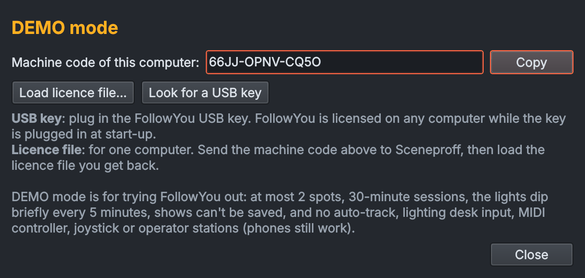
USB key
Plug the key in before you start FollowYou, and FollowYou is licensed on any computer. This is the best choice when the show PC changes from gig to gig.
- The key is tied to that one stick. Copying its files to another stick doesn't work.
- If the stick is pulled out during a show, nothing stops. FollowYou stays licensed until it is closed, and the status bar says USB key removed.
- Plugged it in after starting? Press Look for a USB key in the Licence window.
Licence file
A licence file unlocks one computer.
- Open . It shows this computer's machine code. Press Copy.
- Send the machine code to Sceneproff.
- You get a licence file back (
.fylicence, with a green key icon). Double-click it, or use Load licence file… in the Licence window.
A new Windows installation gives the computer a new machine code, so ask for a new file after reinstalling Windows.
Licence types
The Licence window shows the type: Internal, Free trial, Rental or Purchased. Free trial and rental licences usually have an end date. After that date FollowYou starts in DEMO mode.
Operator stations (a second PC that drives spots through the main station) don't need a licence of their own: they use the main station's.
DEMO mode
Without a licence FollowYou runs in DEMO mode, made for trying it out:
- Sessions last 30 minutes. Then FOLLOW turns off and the output goes dark; restart FollowYou to carry on. The status bar shows the minutes left.
- The lights dip briefly every 5 minutes.
- Shows can't be saved (shows made on a licensed station still open).
- At most 2 spots.
- No auto-track, lighting desk input, MIDI controller, joystick or operator stations. Phones still work.
- The title bar and the presentation screen say DEMO.
Plug in a USB key or load a licence file and everything opens up straight away, without a restart.
Updates
When the station is online, FollowYou checks for a new version a little after it starts, and then every few hours. If there is one, a blue bar appears under the top bar with What's new / install…, Later and Skip this version.
- The bar only shows while FOLLOW is off and the desk isn't locked, so it never pops up in the middle of a show. Offline stations never see it.
- Install downloads the new version and checks that it really comes from Sceneproff. Updates are signed, so a changed or fake file is refused. It then asks to save the show, closes FollowYou and starts the installer. Your profiles, shows and settings are kept.
- checks straight away.
- Untick to turn the check off on a station.
A tour of the window
The top bar is always there, whatever tab you are on. Below it, the tabs take you from setting up the rig to running the show.
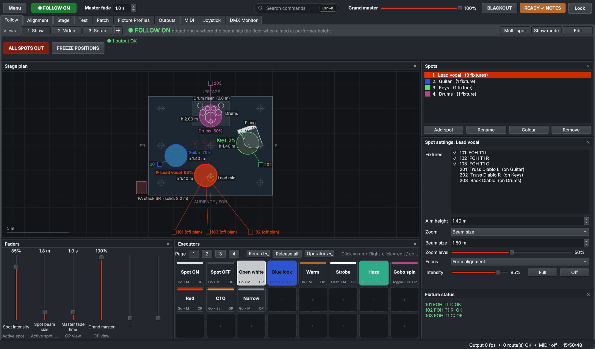
The top bar
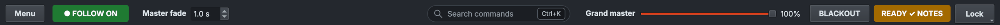
| Control | What it does |
|---|---|
| FOLLOW ON / OFF | The main switch. While FOLLOW is on, every fixture on a spot is driven by FollowYou. FollowYou always starts with FOLLOW off. |
| Master fade | The fade time used by spot on/off (Space), Full/Off, ALL SPOTS OUT and executors that use the master fade. |
| Grand master | Scales every intensity FollowYou sends. |
| BLACKOUT | All intensities FollowYou sends go to zero until you press it again. |
| Lock | Locks the station so nothing changes by accident. The arrow next to it has Lock all and Lock password…. See Lock. |
A red bar appears under the top bar if an output has a problem for more than a second (a USB interface unplugged, the network gone), whatever tab you are on. A blue bar means an update is available (only shown while FOLLOW is off).
The tabs
| Tab | Used for | Chapter |
|---|---|---|
| Follow | Running the show: the stage plan, spots, executors, faders and safety. | Following |
| Alignment | Aiming each moving head at the marks; follow washes (static lights that follow); solid objects and off-stage. | Alignment, Follow washes |
| Stage | Stage size, marks, risers, icons and stage layouts. | The stage |
| Test | Driving any parameter of any fixture by hand. | Test tab |
| Patch | Adding fixtures and setting their addresses. | Patch |
| Fixture Profiles | The profile library: channels, ranges and physical data. | Fixture profiles |
| Outputs | Art-Net, sACN and USB DMX outputs, and lighting desk input. | Outputs |
| MIDI | MIDI controller, global controls, controller lights. | MIDI controllers |
| Joystick | Joystick or gamepad, calibration and mapping. | Joystick |
| DMX Monitor | A live view of every channel FollowYou sends. | DMX Monitor |
The status bar
The bottom line of the window shows the output rate (frames per second), how many outputs are OK, the MIDI state and the time of day (turn the clock on or off with ). In DEMO mode it also shows the minutes left of the session; with a USB key that was pulled out it says USB key removed.
The menus
| Menu | Items |
|---|---|
| File | New show (Ctrl+N), Open show… (Ctrl+O), Save show (Ctrl+S), Save show as…, Open profile folder, Quit. |
| View | Follow page panels, Show mode (F10), Full screen (F11), Presentation screen (F9), Show clock, Console look, Theme (accent colour). |
| Tools | Remote access (phones, operator stations)…, Connect to a main station (become an operator station)…, Lamps…, Windows Firewall ▸ Open firewall for FollowYou / Put firewall back to normal. |
| Help | User manual (F1), User manual online (newest version), Licence (USB key / licence file)…, Check for updates…, Check for updates automatically, About FollowYou. |
What the colours mean
Status colours are the same in every theme and console look, so they always mean the same thing:
- Green: OK, running, receiving.
- Amber: warning, needs attention, waiting.
- Red: error or danger.
Spot colours belong to the spots (change them with Colour in the Spots panel). The accent colour (selected rows, slider fills) comes from the theme.
Quick start: your first follow spot
From an empty show to a working follow spot. Allow about 15 minutes for the first fixture; each extra fixture takes a couple of minutes.
1. Patch the fixtures
- Go to the Patch tab and press Add fixtures….
- Pick the Profile and Mode the fixture runs in, the Quantity, the Universe and Start address. Next free finds the first free address.
- Press OK. The Status column turns green when the addresses don't overlap.
No profile for your fixture? See Making a profile.
2. Send DMX
- Go to Outputs and press Add output.
- Pick the Type: Art-Net, sACN (E1.31), USB DMX (Enttec Pro) or USB DMX (Enttec Open DMX).
- Set the Out universe and the Destination IP (Art-Net/sACN) or the USB port.
- Press Apply. The Status column and the Safety panel show green when the output runs.
Check it: in the Test tab, select a fixture and press Highlight. It should open up at full.
3. Set up the stage and tape the marks
- Go to Stage. Enter the Width (across) and Depth in metres.
- Pick 3 x 3 grid (9 marks, best accuracy) and press Generate marks.
- Tape a cross on the stage floor for every mark, measured from the centre line (X) and the downstage edge (Y). The table shows each mark's position.
4. Align each fixture
- Go to . Select the fixture and tick Light up the fixture.
- Select a mark (in the list, or click it on the plan).
- Drag the pad until the centre of the beam sits exactly on the tape. Hold Shift for 10× finer; arrow keys nudge.
- Press Store (or Enter). It jumps to the next mark.
- After 4 marks the fixture is solved, and FollowYou pre-aims at each next mark for you. Store all 9 if you can.
The Result box shows the accuracy: under 0.5° is good. Repeat for every fixture you want to follow with.
5. Make a spot and follow
- Go to Follow. A new show has one spot, Spot A; press Add spot for more and Rename them after the performers.
- In Spot settings, tick the fixtures that belong to this spot.
- Turn FOLLOW ON in the top bar.
- Press Space to bring the spot up over the master fade, then click and drag on the plan. The fixtures follow.
6. Add follow washes (optional)
Static front lights can follow too. Patch them, then in tick them, press Light this wash and drag each area on the plan to where its light lands. With FOLLOW on they now fade up wherever the performers go. See Follow washes and solid objects.
7. Save the show
Press Ctrl+S. The show file (.fyshow) holds everything: patch, outputs, stage, alignment, spots, executors and a copy of every profile used. Next time at the same venue, open it and you're ready.
Where to go next
- Put presets on buttons: Executors and faders.
- Drive it with hardware: MIDI controllers and Joystick.
- Let a camera do the following: Video and auto-track.
- Hand spots to other operators: Phones, tablets and operator stations.
Patch and fixture profiles
The patch says which fixtures you have and where they are addressed. Profiles say what each fixture's channels do and how far it pans, tilts and zooms.
The Patch tab
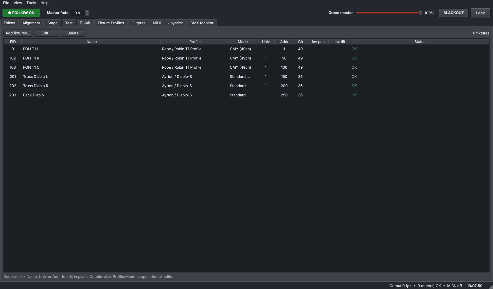
Each row is one fixture: FID (fixture number), Name, Profile, Mode, Univ(erse), Addr(ess), Ch(annel count), Inv pan, Inv tilt and Status.
- Add fixtures… adds one or many at once: pick the profile and mode, the Quantity, the First FID, a Name prefix (“Spot” gives Spot 1, Spot 2…), the Universe, the Start address and the Gap between fixtures. Next free finds the first free address.
- Edit… changes one fixture. Double-click Name, Univ or Addr to edit in place; double-click Profile or Mode to open the full editor.
- Delete removes the selected fixtures.
- Invert pan / Invert tilt: for fixtures hung or set up the other way round. You rarely need these for following, because the alignment works out the direction by itself.
Fixture profiles
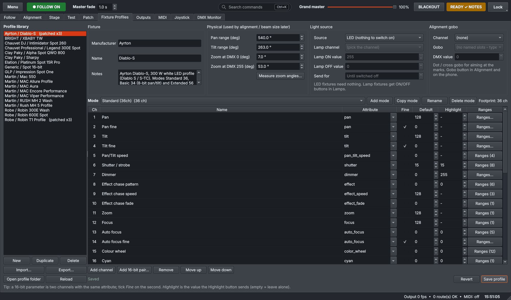
A profile is a .json file in the profile library. FollowYou comes with these 19:
Ayrton Diablo-S · BRIGHT XBABY TW · Chauvet DJ Intimidator Spot 260 · Chauvet Legend 300E Spot · Clay Paky Alpha Spot QWO 800 · Clay Paky Sharpy · Elation Platinum Spot 15R Pro · Generic Spot 16-bit · GLP impression Spot One · Martin MAC 550 · Martin MAC Allure Profile · Martin MAC Aura · Martin MAC Encore Performance · Martin MAC Viper Performance · Martin RUSH MH 2 Wash · Martin RUSH MH 5 Profile · Robe Robin 300E Wash · Robe Robin 600E Spot · Robe Robin T1 Profile
Library buttons
- New, Duplicate, Delete: make, copy or remove a profile. Duplicate an existing profile that's close to your fixture: it's the quickest way to a new one.
- Import… / Export…: share profiles between PCs.
- Open profile folder: opens the folder with the
.jsonfiles (also in ). Copy profiles in and press Reload. - Save profile stores your changes; Revert throws them away.
Making a profile
Open the fixture's user manual at the DMX protocol table and pick the mode you run the fixture in. Fill in the Manufacturer, Name and any Notes, then add one row per DMX channel, in order. Add 16-bit pair… adds a coarse and fine channel in one go.
| Column | What to put in |
|---|---|
| Name | Anything readable, e.g. “Colour wheel”. |
| Attribute | What the channel does: pan, tilt, dimmer, zoom, focus, shutter, color_wheel… or type your own. FollowYou follows with pan, tilt, zoom, focus, dimmer and shutter, so those must be right. |
| Fine | Tick on the second channel of a 16-bit pair (e.g. “Pan fine”). |
| Default | The value sent when nothing controls the channel (pan/tilt usually 128 = centre). For the shutter, use its open value: the dimmer then does all the fading, and the light isn't cut by a closed shutter. |
| Highlight | The value the Highlight button sends (shutter open, dimmer 255, colour open). The Follow tab uses the shutter's Highlight value as “open”. Leave as — to ignore. |
| Ranges | Named slots, e.g. colour wheel Red 10–19. They become quick-pick presets in the Test tab and in executors. |
A profile can have several modes (Add mode, Copy mode, Rename, Delete mode), one per DMX mode of the fixture.
Physical
- Pan range and Tilt range (degrees), e.g. 540° / 265°. Used by the alignment. Small errors are corrected automatically.
- Zoom at DMX 0 and Zoom at DMX 255 (degrees). Used by Beam size. For the Ayrton Diablo-S the spec sheet gives 7°–53°, narrow at DMX 0. Some fixtures are the other way round: the Legend 300E Spot is 20° at DMX 0 and 4° at 255.
Measure zoom angles…
If the manual doesn't give the zoom angles, measure them. Point the fixture at a wall or the floor, enter the Distance lens to wall/floor, then measure the Beam width at Zoom DMX 0 and at Zoom DMX 255. FollowYou works the angles out.
Light source
Leave LED fixtures on LED. For lamp fixtures, pick Lamp / bulb, the Lamp channel (often called Control, Lamp or Reset), the Lamp ON value and Lamp OFF value, and Send for: Until switched off, or a number of seconds if the manual says e.g. “hold 5 s”. See Lamps.
Alignment gobo
Optional, and very helpful. Pick the gobo wheel Channel, then the Gobo from the channel's named slots, or type its DMX value. Choose a small dot or cross. The Alignment tab and the phone then get a Gobo toggle for that fixture: a small dot is much easier to centre on the tape than a full beam.
Profiles and show files
Each PC has its own profile library, and every show file keeps a copy of the profiles it uses. If a show was saved with a different version of a profile than the one on this PC (for example you measured the zoom angles on one PC and not the other), FollowYou lists the differences when the show opens and asks which to use.
- Use the show's versions updates this PC's library and keeps the old file in
profiles\backup. - If you keep this PC's versions, the show behaves the way those profiles say (e.g. no beam size without zoom angles).
The Test tab
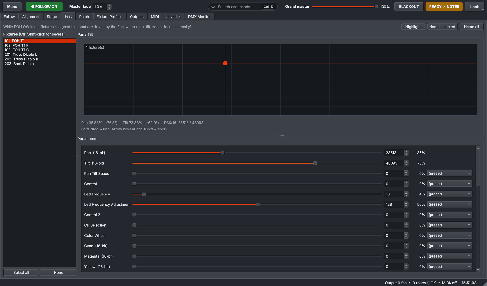
- Select one or more fixtures (Ctrl/Shift-click for several, or Select all).
- Drag the Pan / Tilt pad; Shift-drag is fine, arrow keys nudge.
- Every parameter gets a slider. Channels with named ranges get a preset list.
- Highlight sends the Highlight values; Home selected / Home all send the defaults.
While FOLLOW is on, fixtures on a spot are driven by the Follow tab (pan, tilt, zoom, focus, intensity), so the Test tab only changes their other parameters.
Outputs and lighting desk input
FollowYou sends DMX over Art-Net, sACN or a USB interface, and can take your lighting desk's output and pass it through.
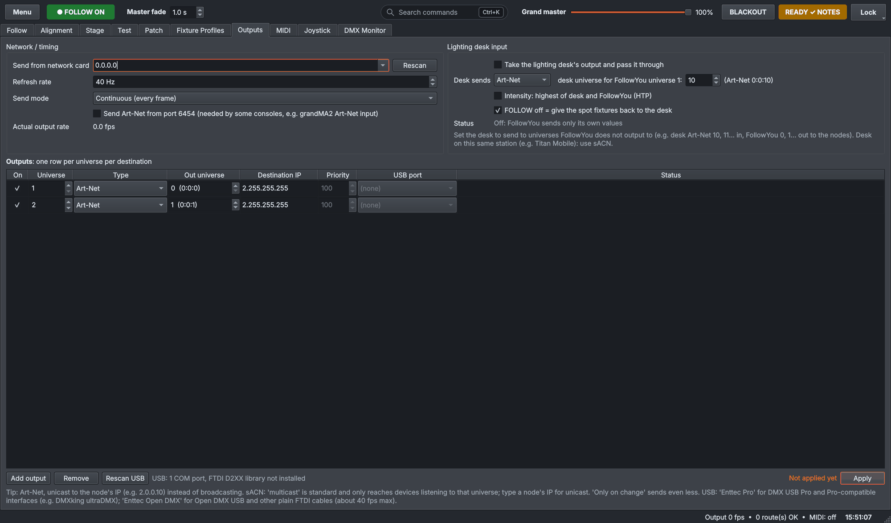
Outputs
Each row sends one FollowYou universe to one destination. Press Add output, fill in the row and press Apply (“Not applied yet” reminds you).
| Column | Meaning |
|---|---|
| On | Tick to send. Untick to stop that output without deleting it. |
| Universe | The FollowYou universe (as used in the Patch). |
| Type | Art-Net, sACN (E1.31), USB DMX (Enttec Pro) or USB DMX (Enttec Open DMX). |
| Out universe | The universe on the wire. Art-Net: a 15-bit port address shown as Net:Sub:Uni. sACN: 1–63999. |
| Destination IP | Art-Net: the node's IP, or broadcast (e.g. 2.255.255.255). sACN: multicast, or a node's IP for unicast. |
| Priority | sACN only, 0–200, default 100. When a receiver gets the same universe from several sources, the highest priority wins. |
| USB port | USB types only: the interface (see below). |
| Status | Whether the output is running, and why not. |
Send one universe to two places (a node and a visualiser, say) by adding two rows with the same Universe.
Network / timing
- Send from network card: pick the network card the nodes are on (Rescan after plugging in a cable).
- Refresh rate: 10–44 Hz. The actual rate is shown next to it.
- Send mode: Continuous (every frame), or Only on change (+1 s keep-alive) to send a universe only when something changed, plus once a second.
- Send Art-Net from port 6454: needed by some consoles, e.g. grandMA2 Art-Net input. Normally FollowYou never claims port 6454 for sending, so a visualiser on the same PC keeps working.
Art-Net and sACN tips
- Art-Net: unicast straight to the node's IP (e.g. 2.0.0.10) instead of broadcasting.
- sACN:
multicastis standard and only reaches devices listening to that universe. - FollowYou keeps the same sACN source ID between starts. When you switch an sACN output off, or close FollowYou, it tells receivers the stream has ended, so they drop it straight away instead of holding the last look for about 2.5 seconds.
USB DMX interfaces
- USB DMX (Enttec Pro): ENTTEC DMX USB Pro / Pro Mk2 (port 1), DMXking ultraDMX Micro / ultraDMX2 PRO, and other Enttec Pro protocol interfaces.
- USB DMX (Enttec Open DMX): ENTTEC Open DMX USB and other plain FTDI “Open DMX” cables. These have no processor, so FollowYou makes the DMX signal itself and keeps repeating it (about 40 frames a second, the most DMX allows with a full universe).
The USB port list shows two kinds of entries:
- COM ports, e.g.
COM4 USB Serial Port. - FTDI direct devices, e.g.
ftdi:A700ABCD FT232R USB UART [A700ABCD] - FTDI direct. These use FTDI's own driver (the same way QLC+ does) and work even when the interface has no COM port. Pick this one for an Enttec interface if you can. It needs the FTDI driver (ftd2xx.dll), which is installed if QLC+ can see the interface.
The line next to Rescan USB says what was found, e.g. “USB: 0 COM ports, 1 FTDI device”, or that the FTDI driver is missing.
Lighting desk input
FollowYou can sit between your lighting desk (Avolites Titan, grandMA, ChamSys, any desk with Art-Net or sACN out) and the nodes. The desk keeps control of everything; FollowYou only takes over the channels it actually drives.
- On the desk, send Art-Net or sACN to universes FollowYou does not output to. For example the desk sends Art-Net 10 and 11, and FollowYou outputs 0 and 1 to the nodes. If the desk runs on the same PC as FollowYou (e.g. Titan Mobile), use sACN.
- In Lighting desk input, tick Take the lighting desk's output and pass it through, pick Art-Net or sACN and the desk universe for FollowYou universe 1. The next desk universe becomes FollowYou universe 2, and so on. Press Apply.
- The status line shows each universe: green = receiving from the desk (with its IP or name), amber = nothing received yet, or the desk stopped.
What FollowYou takes over
- Fixtures on a spot while FOLLOW is on: pan, tilt, zoom, focus, intensity and shutter.
- Anything you set yourself in FollowYou: executors, the Test tab, Highlight, the alignment and lamp commands.
Everything else (colour, gobos, prism, frost, and all fixtures not on a spot) comes straight from the desk.
Options
- FOLLOW off = give the spot fixtures back to the desk (on by default): switching FOLLOW off hands pan, tilt, zoom, focus and intensity of the spot fixtures back to the desk.
- Intensity: highest of desk and FollowYou (HTP): off (default) means FollowYou decides the intensity of the fixtures it follows with; on means the desk can bring them up too.
- Grand master and BLACKOUT in FollowYou only affect the intensities FollowYou sends. The desk's own levels pass through as they are.
- If the desk stops sending, FollowYou keeps its last look, like a node would, and the Safety panel says so.
- FollowYou ignores its own output, so a wrong universe can't loop. If the desk and FollowYou use the same universe, the status says so in red.
DMX Monitor
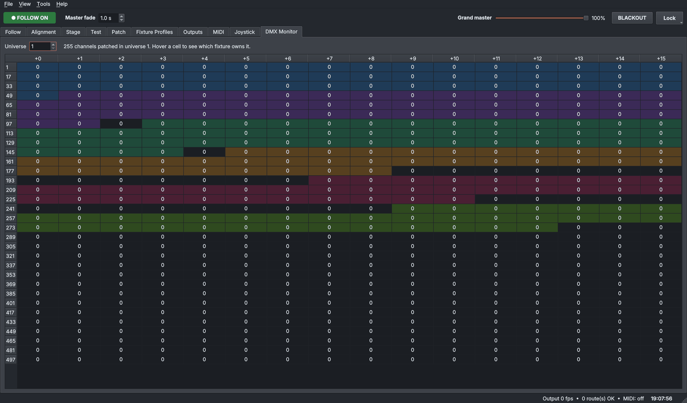
Pick a Universe to see the 512 values FollowYou sends, live. Channels are coloured by the fixture they belong to; hover over a cell to see which fixture and parameter it is. Use it to check that a fixture really gets what you expect before blaming the fixture or the cable.
The stage
The Stage tab describes the floor in metres: its size, the taped marks, risers, icons and stored stage layouts.
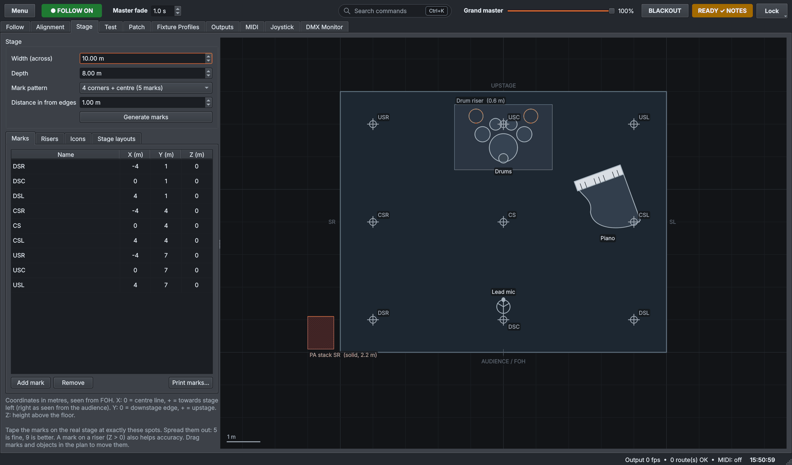
Coordinates
All positions are in metres, as seen from FOH:
- X = 0 is the centre line; + is towards stage left (the audience's right).
- Y = 0 is the downstage edge; + is upstage.
- Z is height above the stage floor.
Stage size and marks
- Enter the stage Width (across) and Depth in metres.
- Pick a Mark pattern: 3 x 3 grid (9 marks, best accuracy) or 4 corners + centre (5 marks).
- Set Distance in from edges (how far the outer marks are from the edges) and press Generate marks.
- Tape the marks on the real stage at exactly those positions. Use a tape measure from the centre line (X) and the downstage edge (Y).
The marks are named the way crews say them: DSR, DSC, DSL (downstage right, centre, left), CSR, CS, CSL, USR, USC, USL. Generating marks again moves marks with the same name rather than replacing them, so the alignment stored on them is kept. You can also add, edit and remove marks by hand (Add mark, or drag them on the plan).
Risers
A riser is anything a performer stands on: a drum riser, a podium, a step. Add it in the Risers tab with its position, size and height. When a spot moves onto a riser, the aim point is raised by the riser height automatically.
Things that block light (speaker stacks, pillars, set walls) are solid objects; they're set up under .
Icons
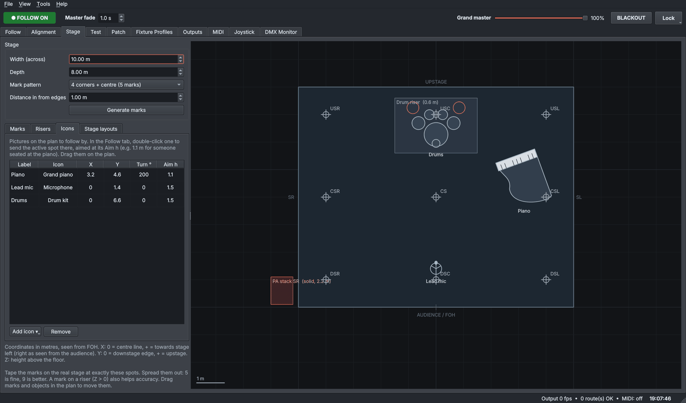
Add icon ▾ puts a picture on the plan: grand piano, keyboard, guitar, drum kit, microphone, podium / lectern, chair, table, DJ booth, monitor wedge, screen, or a plain position star. Drag them on the plan, name them, turn them, and set Aim h: the height a spot sent there aims at (1.1 m for someone seated at the piano).
Icons show on the Follow tab, the operator stations and the 3D view. In the Follow tab, double-click an icon to send the active spot there: it glides over the master fade.
Stage layouts
For shows with scenery changes. A stage layout stores the risers, solid objects and icons.
- Save as new… stores the stage as it is now.
- Update overwrites the selected layout.
- Recall (or double-click) puts it on stage.
- During the show, Layout ▾ in the Follow tab recalls one with a click.
The marks and the alignment are not part of a layout, so they stay as they are.
Alignment
Aim each fixture at a few taped marks, once per venue. FollowYou works out where it hangs and how it is turned, and from then on it can aim at any point on stage.
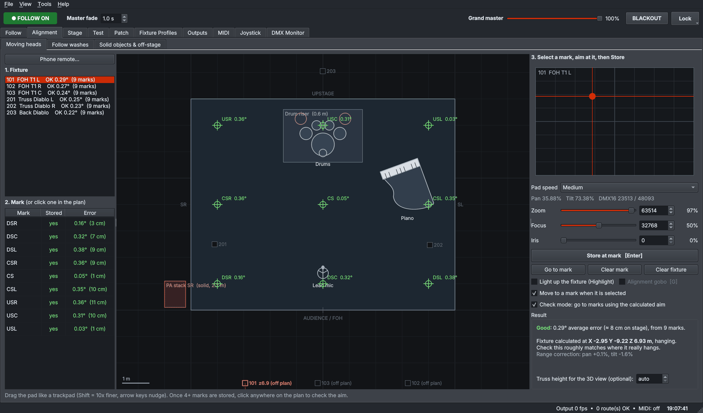
Aligning a moving head
- Select the fixture in list 1 and tick Light up the fixture.
- Select a mark in list 2, or click it on the plan.
- Drag the pad like a trackpad until the centre of the beam sits exactly on the tape. Pad speed changes how fast it moves; hold Shift for 10× finer. Arrow keys nudge. Set zoom and focus too if you want them stored for that mark.
- Press Store (or Enter). It jumps to the next mark.
- After 4 marks the fixture is solved. From then on, selecting a new mark pre-aims the fixture there, so you only touch it up and store.
Aiming aids
- Iris (if the fixture has one) makes the spot smaller and sharper, so it's easier to put exactly on the tape. It's only an aiming aid: it isn't stored, and it goes back to how it was when you pick another fixture or leave Alignment.
- Alignment gobo (G) puts a dot or cross gobo in, if the profile has one set (see Alignment gobo). It comes out again when you untick it, pick another fixture or leave Alignment.
Reading the result
The Result box shows the accuracy and where FollowYou thinks the fixture hangs. Check that position roughly matches reality: it's the quickest sanity check.
- Under 0.5° is good.
- If one mark has a much bigger error than the others, re-store that one, or check the tape is where the Stage tab says it is.
- 4 marks always fit exactly, so the error can't be measured. Store a 5th (ideally all 9) before trusting it.
- Suspicious means the solve needed a huge range correction to fit. That almost always means one mark was stored aimed at the wrong spot. Re-store (or clear) the mark with the biggest error.
Pan and tilt range come from the fixture profile. Small errors in them are corrected automatically (“Range correction”).
Check mode
On by default. Once a fixture is solved, selecting a mark aims there using the same calculation the Follow tab uses, so what you see is the real accuracy. If it's off, nudge it onto the tape and press Store again. Clicking anywhere on the plan aims at that point on the floor, again using the calculation.
Truss height for the 3D view
Optional. The calculated height is sometimes a little off, which the 3D view on the presentation screen shows. Type the real truss height in Truss height for the 3D view and the fixture is drawn hanging from that height. It's only for the drawing: the follow doesn't use it. Leave it on auto and nothing needs measuring.
Aligning from your phone
Walk on stage and align without carrying the station.
- (or Phone remote… above the fixture list). Tick Remote access on and pick Phone: alignment (walk the stage).
- Connect the phone to the same Wi-Fi as the station. No Wi-Fi at the venue? Turn on Windows Mobile hotspot and join that, then pick the hotspot network in the window (usually 192.168.137.1).
- Scan the QR code with the phone camera, or type the address shown. Enter the 4-digit PIN once.
- On the phone: pick the fixture, tap Light, tap a mark (on the plan or in the list), drag the pad until the beam is on the tape, press STORE. Two fingers on the pad = 10× finer. The arrow buttons nudge, and repeat while held. Zoom, focus and iris are under the pad.
The station jumps to and shows the same fixture and mark as the phone. Both stay usable, and a phone can't move a fixture that was just changed on the station.
- Direction & options: if dragging moves the beam the wrong way from where you're standing, flip left/right, flip up/down or swap them. This is saved per fixture on that phone. You can also turn the plan round so the audience is at the top, as you see it from the stage.
- Phone browser menu → Add to Home screen gives a full-screen app icon.
- The phone can't connect? Windows Firewall is the usual cause: see Windows Firewall.
Follow washes and solid objects
The other two sub-tabs of Alignment, Follow washes (static fixtures that come up wherever a performer is) and Solid objects & off-stage (things that block light), have their own chapter: Follow washes and solid objects.
Follow washes and solid objects
Not every light in the rig moves. Follow washes let static fixtures (front PARs, fresnels, LED washes) take part in the follow: each one covers an area of the stage and fades up when a performer walks into it. Solid objects do the opposite: they dim a moving head when something is in the way.
What follow washes are for
A follow wash is a static fixture tied to an area of the stage. When a spot walks into that area, the wash comes up. When the spot walks out, it fades down again. Nothing moves; the light simply “follows” by handing over from one fixture to the next.
- Front light without movers. A row of front PARs or fresnels, each focused on its own zone, gives a performer an even front light wherever they go, and the rest of the stage stays dark. That's a working follow with no moving heads at all.
- A base under the movers. The moving heads do the tight, punchy spot; the washes fill in a soft, wider front light around it.
- Specials. A wash can be tied to one performer only, so the piano special only comes up for the piano player.
- Area colour. LED washes over parts of the stage that open up where the band is playing.
Follow washes need no alignment: they don't move, so FollowYou only needs to know which area each one lights. You draw that area on the stage plan.
Which fixtures can be follow washes
- Any fixture with a dimmer: LED PARs, fresnels and profiles on dimmers, LED washes and battens, or a moving head you park in one place.
- The fixture must be patched with a profile that has a
dimmerchannel. The profiles that come with FollowYou are moving heads, so for a PAR you make a small profile once: New in Fixture Profiles, one row per channel, attributedimmeron the dimmer channel (andred,green,blue,whiteor whatever else it has). See Making a profile. - A fixture that is on a spot is skipped: it can't be a spot fixture and a follow wash at the same time.
How the level is worked out
For every wash, many times a second, FollowYou works out:
wash level = how central the spot is in the area × the spot's intensity × the wash's Max level × the follow-wash Master
- How central is 100 % in the middle part of the area and fades smoothly to 0 % over the soft edge, as in the drawing.
- The spot's intensity counts: a spot at 50 % brings its washes to 50 %; a spot that is off doesn't bring up any washes. So Space, Full/Off, faders and ALL SPOTS OUT fade the washes together with the spot.
- With several spots in one area, the wash takes the highest level any of them asks for.
- When a spot walks off the stage, its washes fade out with it (see Off-stage fade).
- Fade 0 → full limits how fast a wash may change: with 0.5 s, a wash takes half a second to go from dark to full. Slower feels softer and hides small jumps; faster keeps up with a running performer.
- FollowYou drives the wash's dimmer (and opens its shutter, if it has one). Colour and everything else stay as they are: set them with an executor, the Test tab, or from your lighting desk.
- Washes only run while FOLLOW is on.
Setting up follow washes
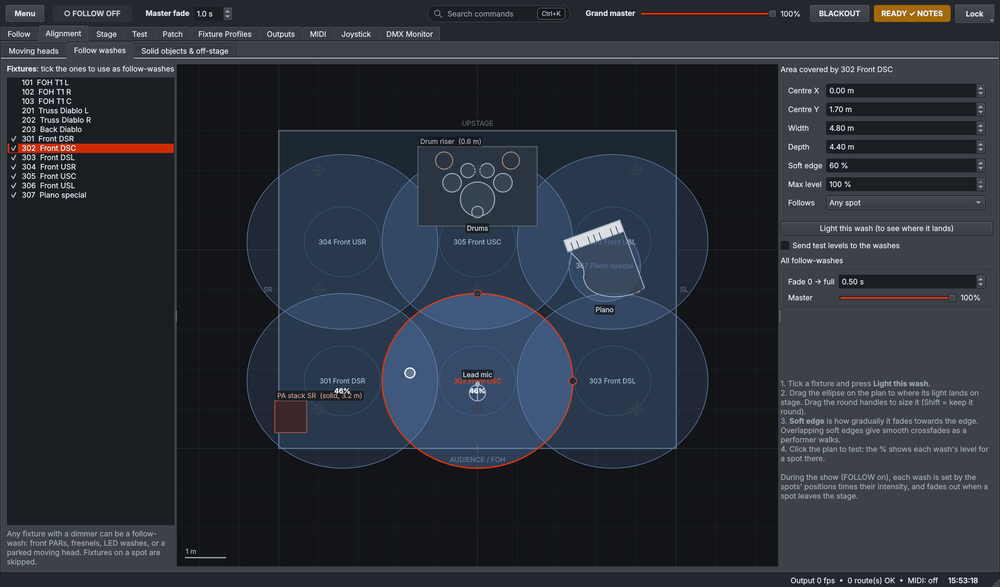
- Go to and tick the fixtures to use as follow washes. Each one gets an area on the plan.
- Select a wash and press Light this wash (to see where it lands). Only that fixture comes up, at full.
- Look where its light lands on the stage, then drag the ellipse on the plan to the same place. Drag the round handles to size it; hold Shift to keep it round. Or type Centre X, Centre Y, Width and Depth in metres.
- Set the Soft edge. Around 50–60 % works well for front light.
- Repeat for the next wash. Make neighbouring areas overlap by their soft edges, so a performer walking from one to the next gets a smooth crossfade instead of a dip.
- Test: click or drag on the plan. Each area shows the level its wash would have for a performer standing there. Tick Send test levels to the washes to see the real lights do it.
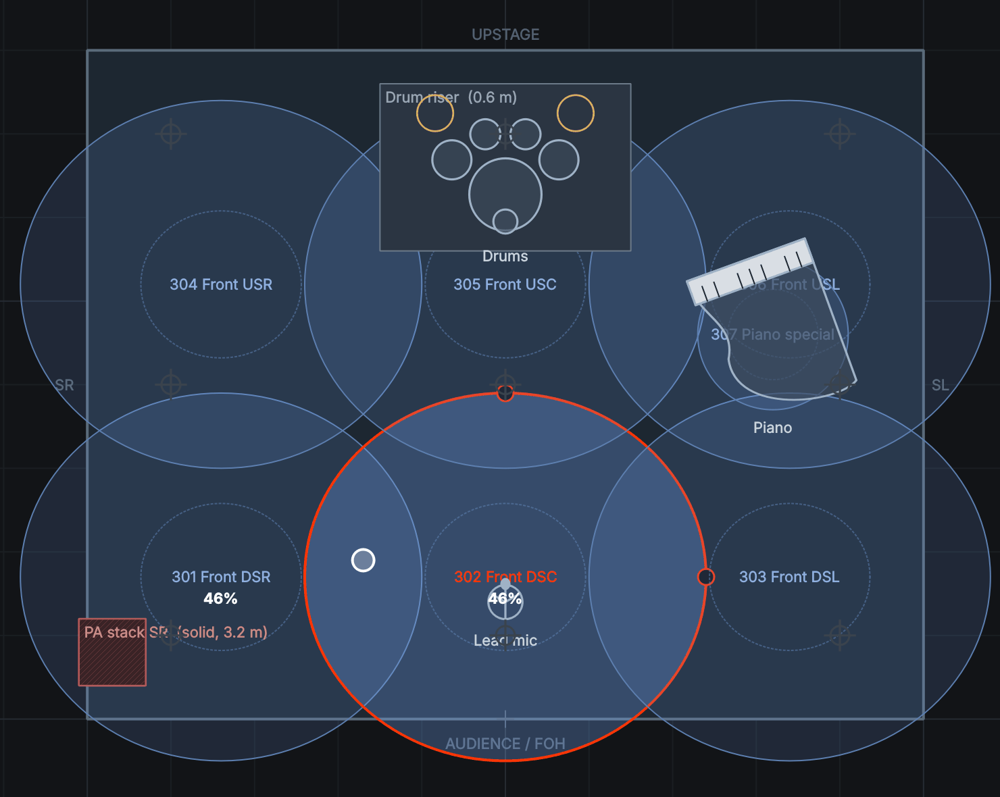
Settings for each wash
| Setting | What it does |
|---|---|
| Centre X / Centre Y | The middle of the area, in stage metres (X = 0 is the centre line, Y = 0 the downstage edge). |
| Width / Depth | The size of the area across and up/downstage. Match it to where the light actually lands at performer height. |
| Soft edge | How much of the area fades. 0 % = hard edge (full right up to the edge, then off); 100 % = fades all the way from the centre. |
| Max level | The highest level this wash ever goes to. Use it to balance a brighter fixture against the others, or to keep a special subtle. |
| Follows | Any spot, or one spot only. A wash that follows one spot ignores everyone else. |
Settings for all washes
| Setting | What it does |
|---|---|
| Fade 0 → full | How fast washes may change, in seconds from dark to full. |
| Master | Scales every follow wash. Also in the Follow tab (Follow washes in Options), on a fader (Follow-wash master), on the APC mini's fader 8 and the nanoKONTROL2's knob 1. |
Example: front light in six zones
A 10 × 8 m stage with six LED PARs on the FOH truss, focused in a 3 × 2 grid, plus a PAR as a piano special. This is the setup in the screenshots.
| Wash | Centre X, Y | Width × depth | Soft edge | Follows |
|---|---|---|---|---|
| 301 Front DSR / 302 DSC / 303 DSL | −3.4 / 0 / 3.4, 1.7 | 4.8 × 4.4 m | 60 % | Any spot |
| 304 Front USR / 305 USC / 306 USL | −3.4 / 0 / 3.4, 5.2 | 4.8 × 4.4 m | 60 % | Any spot |
| 307 Piano special | 3.2, 4.6 | 1.8 × 1.8 m | 40 %, Max level 90 % | Keys only |
- Patch the PARs with a simple PAR profile and tick them in Follow washes.
- Light each one, drag its area to where it lands, set the sizes above. Zone centres 3.4 m apart with 4.8 m wide areas overlap by about 1.4 m: right for a smooth handover.
- Set the piano special to follow the Keys spot only, so the singer walking past the piano doesn't bring it up.
- Make an executor that sets the PARs' colour (e.g. a warm white), and press it before the show.
- FOLLOW on, bring the spots up. The front light now walks with the performers.
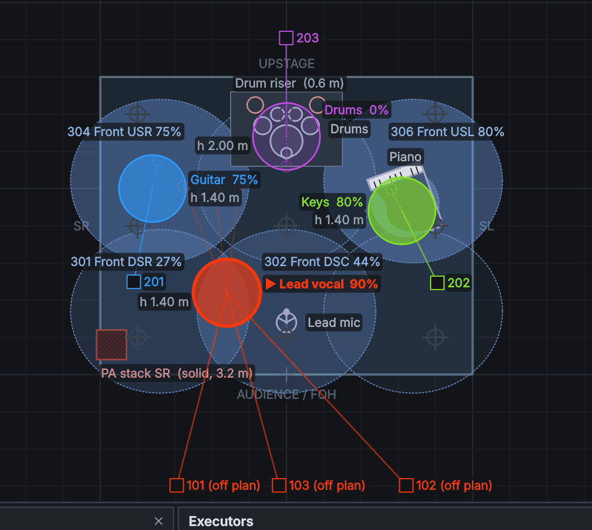
During the show
- The Follow tab draws each area dotted. It fills in brighter as its wash comes up, with the fixture's level next to it, so you can see at a glance which washes are on.
- Follow washes in Options (or a fader) is the master: pull it down to keep only the movers.
- ALL SPOTS OUT, Space and spot faders take the washes with them, because a wash follows its spot's intensity.
- BLACKOUT and the grand master work on washes too.
- While you work on a wash in the Alignment tab (Light this wash, test levels), that wash is paused from following, so you can adjust it with the show running.
Solid objects
A solid object is anything light can't go through: a speaker stack, a pillar, a set wall, a screen. If the straight line from a moving head to the performer passes through one, that fixture dims out, and comes back when the view is clear. The other fixtures on the same spot stay on, so the performer is still lit from the fixtures that can see them.
Setting them up
- Go to and press Add solid object.
- Fill in the Label, X, Y (the centre), Width, Depth and Height in metres, or drag the box on the plan.
- Click the plan where a performer might stand behind it. Every aligned fixture gets a line to that point: green = it can see the performer, red with “blocked” = it will dim. The test uses the active spot's aim height.
- Set Dim / return time: how quickly a blocked fixture dims and comes back (0.3 s is a good start).
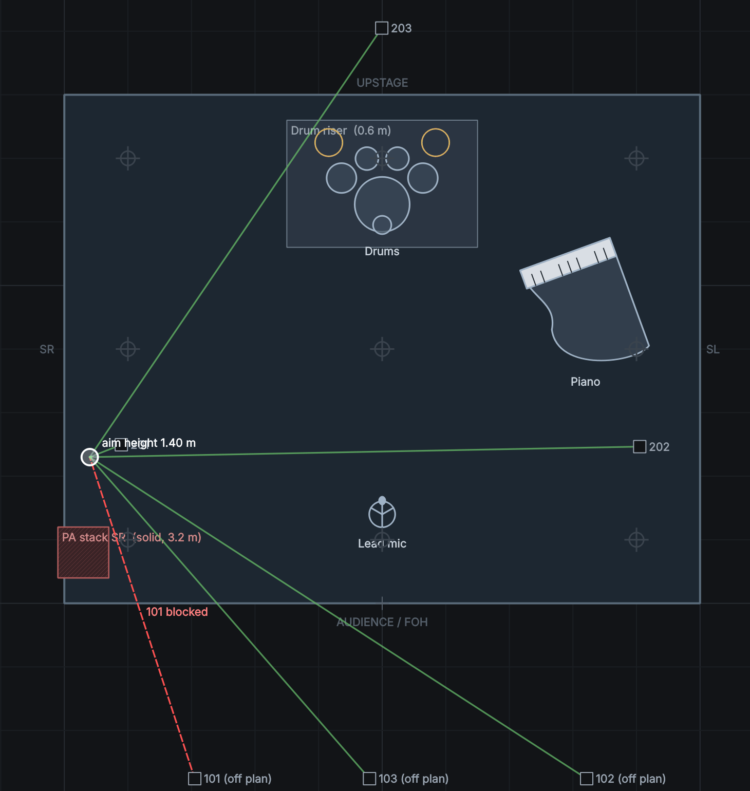
During the show, Fixture status says Blocked (dimmed) for a fixture that is dimmed because of a solid object:
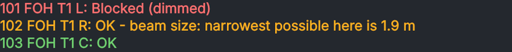
- Fixtures only appear in the test once they are aligned (see Alignment), because FollowYou needs to know where they hang.
- Untick Dim a fixture while a solid object is in its way to switch blocking off without deleting the objects.
- Solid objects are part of stage layouts, so a set change can bring its own walls.
- Things performers stand on are risers, set up in the Stage tab. Things that block light are solid objects. A drum riser with a screen in front of it can be both.
Off-stage fade
When a spot moves past the edge of the stage (a performer walking off, or the joystick pushed too far), the spot and its washes fade out instead of lighting the wings or the audience.
- Fade a spot out when it leaves the stage switches it on or off.
- Starts this far past the edge: some leeway for the lip of the stage or a performer leaning out (0.3 m by default).
- Fully out after another: how gradual the fade is (1.0 m by default). The spot is at 0 % once it is this far beyond the starting line.
Walking back on brings the spot back up to where it was.
Following: show time
The Follow tab is where the show runs. The stage plan is in the middle; spots, settings, executors, faders and safety sit in panels around it.
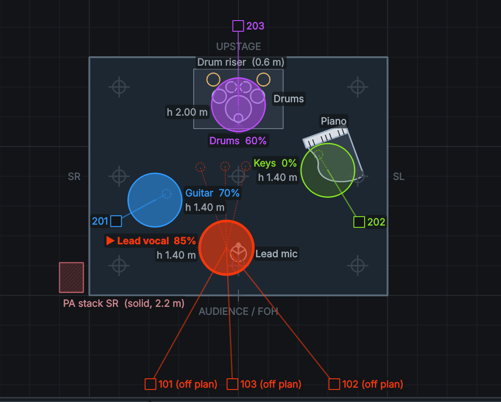
Spots
Each spot is one performer. The Spots panel lists them: Add spot, Rename, Colour and Remove. The spot's colour is used on the plan, the video ghosts, the spot strip and the phones.
The active spot is the one you are driving: it's highlighted in the list and drawn with ▶ on the plan. Pick it with 1–9, by clicking it in the list or the spot strip, or by right-clicking near it on the plan.
In Spot settings, tick the fixtures that belong to the active spot. A fixture can only be on one spot at a time. Fixture status shows each one: green OK, amber OK – … with a warning (a zoom it can't reach, say), red when it can't follow (not aligned, or the point is out of its reach).
Driving a spot on the plan
| Do this | To |
|---|---|
| Click / drag on the plan | Move the active spot |
| Shift-drag | Move it finely |
| Arrow keys | Nudge it |
| Mouse wheel | Beam size (zoom level in Manual zoom) |
| Ctrl+wheel | Aim height |
| 1–9 | Pick a spot |
| Space | Active spot on/off over the master fade |
| Right-click | Pick the nearest spot |
| Double-click an icon | Send the active spot to it (glides over the master fade) |
| M | Multi-spot on/off |
Turn FOLLOW ON in the top bar first. FollowYou always starts dark: FOLLOW off and every spot at 0.
Spot settings
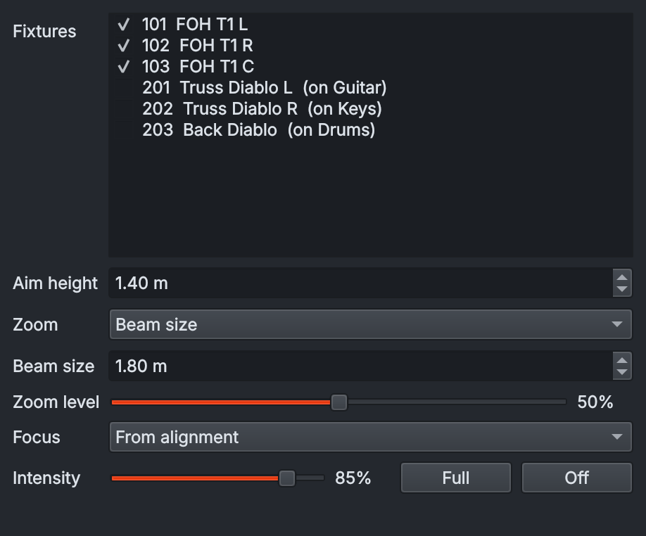
Aim height
Where on the performer to aim: 1.4 m is about chest height. Ctrl+wheel changes it. On an empty stage this makes the light land behind the dot: a front-of-house fixture aimed at 1.4 m hits the floor several metres further upstage, and the dotted rings on the plan show where. That's correct: with someone standing on the dot, it's on them.
Floor test
In Options, tick Floor test to aim at the floor instead, so the beam lands exactly on the dot. Use it to check the alignment on an empty stage, then untick it for the show. It isn't saved with the show.
Zoom
- From alignment blends the zoom you stored at each mark.
- Beam size keeps the beam the same width in metres anywhere on stage. The wheel changes the size. This needs the zoom angles in the profile (see Measure zoom angles); without them, Spot settings says so and the zoom is left alone. A size the fixture can't reach from where it hangs (e.g. 1 m from 15 m away with a 15° narrowest zoom) stays at the narrowest or widest, and the status says what the limit is.
- Manual (zoom level slider) gives a Zoom level slider (0–100 %) that sends the zoom channel directly. The wheel changes it too, and so can a fader (Spot zoom level) or an executor. Moving the slider switches the spot to Manual.
Focus
From alignment blends the focus stored at each mark, or Manual.
Intensity
The spot's dimmer. When it's above 0, the shutter opens using the shutter channel's Highlight value from the profile. Underneath it shows what last changed it: “Joystick Z axis”, “MIDI CC 48”, “Executor ‘Spot ON’”, a phone's name…
Smoothing
In Options. Makes mouse movement less jerky: 50–150 ms feels natural; 0 = instant.
Fades
- Space turns the active spot on/off over the master fade time. Full and Off in the spot panel fade too.
- The intensity slider and faders are always instant.
- Grabbing a control while it's fading takes over straight away. For example, dragging the spot during a position fade stops the fade.
Multi-spot
Multi-spot (top right of the plan, or M) drives several spots at once.
- Ctrl+click a spot tile, Ctrl+right-click a spot on the plan, or press Ctrl+1–9 to add a spot to the group or take it out. The button shows how many spots are in it; dashed lines join them to the active spot on the plan.
- The active spot leads. When it moves (mouse, joystick, phone, auto-track, a position preset), the others keep their distance to it, so a formation moves as one. They copy its level, beam size, aim height and zoom.
- Space, Full/Off and the intensity fader work on the whole group.
- Executors for the active spot act on every spot in the group (a colour preset colours them all). A position preset moves the lead and the others follow.
- Picking another active spot keeps the group and adds the new one to it.
The Safety panel
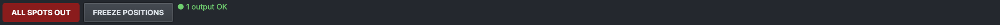
- ALL SPOTS OUT fades every spot (and the follow washes with them) out over the master fade. Press it again within 3 s to cut instantly. Each spot remembers its level for the next “on”.
- FREEZE POSITIONS: every spot stays exactly where it is. Mouse, joystick, executors, phones and operator stations can't move them until you click it again. Useful if a joystick plays up or someone grabs the wrong phone.
- It shows the output health: every output, with a warning when an output sends a universe with nothing patched in it, fixtures on a spot that aren't aligned, BLACKOUT, and the phones and operator stations that are connected.
Arranging the Follow page
The stage plan stays in the middle; everything else is a panel: Safety, Spot strip, Spots, Spot settings, Fixture status, Options, Faders, Executors, Keys and mouse help, and Video.
- Drag a panel by its title to move it to another side, drop it on another panel to make tabs, or drag it out to float it, for example onto a second screen.
- The × closes a panel; Panels ▾ (top right of the plan) or brings it back.
- Panels ▾ → Lock panels hides the title bars (more room) and stops panels being moved by accident during a show.
- Panels ▾ → Save layout as… stores the arrangement under a name (“Setup”, “Show”, “Two screens”); Load layout switches between them. Reset to the standard layout if you get lost.
- The layout is remembered per computer, not per show. A panel made smaller than its content gets a scrollbar, so any arrangement works on any screen size.
Show mode
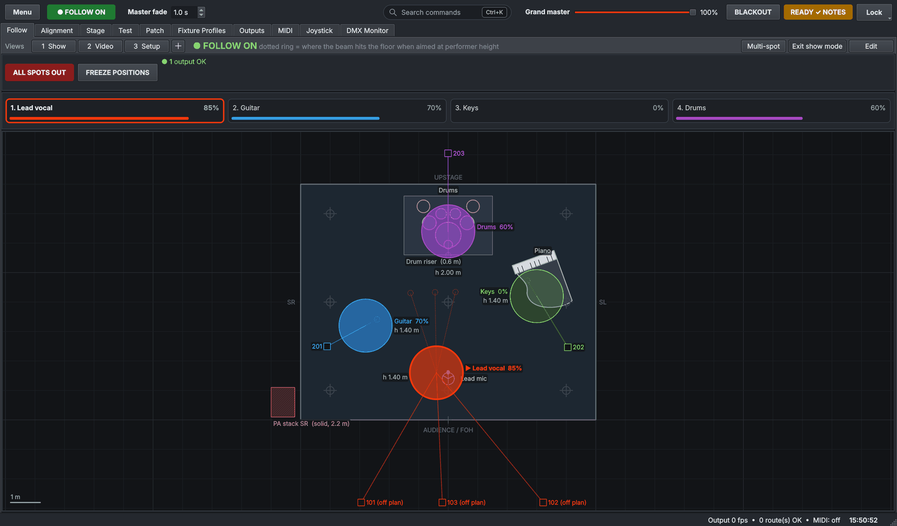
Show mode (button, or F10) leaves just the plan, the spot strip and the safety panel (and the Video panel, if it was open). The spot strip has one tile per spot: pick it, see its level, switch it on/off. Press Show mode again to get your panels back. F11 = full screen.
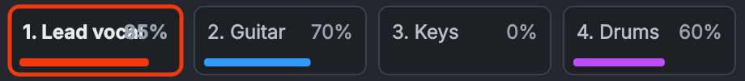
Lamps (bulb and discharge fixtures)
Fixtures with a lamp instead of LEDs have to be switched on (“struck”) and off with a DMX value on a control channel, often held for a few seconds. Set the lamp channel and values in the profile first (Light source).
- Open (or Panels ▾ → Lamps on the Follow page). Every lamp fixture gets a Lamp ON and a Lamp OFF button.
- Press one: FollowYou keeps sending that value until you press it again (or the time runs out). Then the lamp channel goes back to its default value, so the fixture doesn't keep seeing the command (on many fixtures that channel also does resets).
- All lamps ON, All lamps OFF… (asks first) and Stop sending work on the whole rig. While a lamp command is being sent, the Safety panel says so.
Operator stations can use the Lamps panel too; the main station sends the DMX.
Executors and faders
Executors are the buttons under the stage plan: presets for colour, position, beam and anything else. Faders sit next to them for levels and sizes.
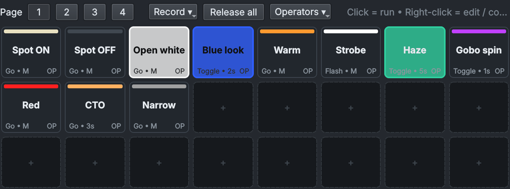
What an executor is
There are 4 pages of 24 executors. Each one is a list of lines of the form “set this parameter to this value on these things”. You can mix anything in one button.
| Applies to | Meaning |
|---|---|
| Active spot | Whichever spot is selected when you press it. Use this for colour and position presets you want to reuse on any performer. |
| Spot: name | Always that spot. |
| All spots | Every spot. |
| Fixtures… | Exactly the fixtures you pick (click anywhere on a fixture's line to tick it). |
| All fixtures | Everything patched. |
Parameters
- Spot parameters: intensity, position X/Y, aim height and beam size. A preset that sets position X/Y is a position preset: the spot glides there and the fixtures follow.
- Fixture parameters: anything in the profile, e.g. cyan, colour wheel, gobo, prism, frost. If the channel has named ranges, you can pick a slot (e.g. “Red”) next to the value.
While FOLLOW is on, a spot controls pan, tilt, zoom, focus, dimmer and shutter of its fixtures. Use the spot parameters (intensity, beam size, aim height) for those. The editor warns you if a line would clash.
Button types
| Type | Behaviour |
|---|---|
| Go | Sets the values. They stay until something else changes them. The button lights up while its values are live. |
| Toggle | Press to apply, press again to go back to how it was before. |
| Flash | Applies the values only while held. |
Fades
- An executor uses the Master fade (top bar) or its own fade time.
- Each line has a Fade tick box. Colour wheels, gobo wheels, prisms and shutters snap by default, because fading a wheel scrolls through every slot in between.
- Position presets glide with an eased start and stop.
Making executors
- Record ▾: one click captures the active spot's position, colour or beam (gobo, prism, frost and so on) into the next free button. Custom… lets you pick fixtures and parameters. The editor then opens so you can name it.
- Click an empty slot to build one from scratch.
- Right-click a button to edit, learn MIDI or a joystick button, duplicate, copy or delete it.
- Release all turns off every toggle and flash executor.
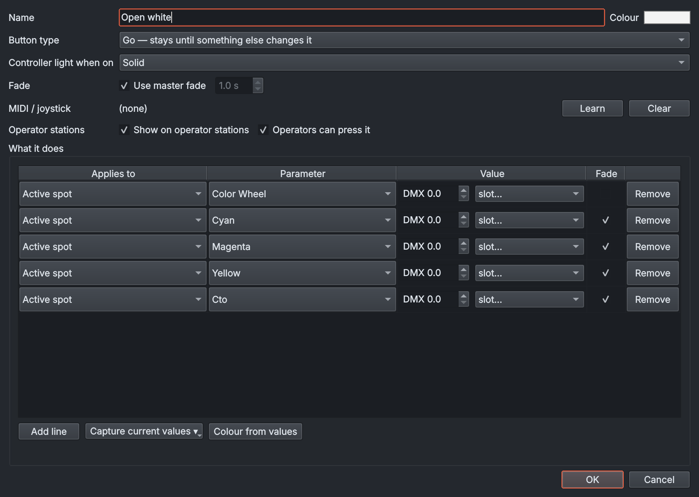
The editor
| Setting | Meaning |
|---|---|
| Name, Colour | What the button says and its colour. Colour from values colours the button from its CMY/RGB lines. |
| Button type | Go, Toggle or Flash. |
| Controller light when on | Solid, Blink or Pulse on a MIDI controller with lights, in the executor's colour. |
| Fade | Use master fade, or its own time. |
| MIDI / joystick | Learn a pad, key or joystick button for it; Clear removes it. |
| Operator stations | Show on operator stations and Operators can press it. See Executors for operator stations. |
| What it does | The lines. Add line, or Capture current values ▾ to pull in live values. |
Faders
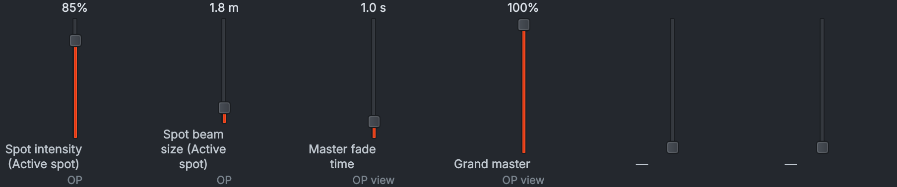
There are 6 faders next to the buttons. Double-click or right-click a fader to choose what it controls:
- Grand master
- Master fade time
- Spot intensity, beam size, zoom level (Manual zoom) or aim height: of the active spot, a named spot, or all spots
- Any fixture parameter (for example frost on the active spot's fixtures)
- The follow-wash master
Right-click → Learn MIDI fader/knob and move a fader or knob on your controller to put it on hardware.
Record and play back
Record the spots while you follow a rehearsal, then play the moves back in the show: by hand, from the lighting desk, or locked to timecode. Very useful for theatre and for shows that repeat night after night.
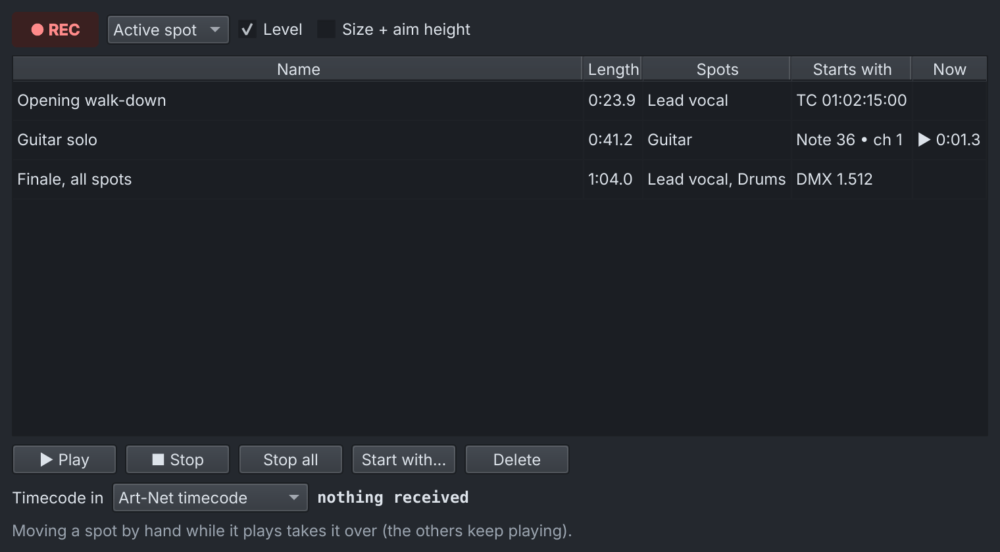
Record
- Pick what to record: Active spot (with its multi-spot group) or All spots. Position is always recorded; tick Level and/or Size + aim height for those too.
- Press ● REC and follow the rehearsal as usual. Anything that moves the spots is recorded: the mouse, the joystick, operator stations, phones, auto-track, executors.
- Press ■ STOP REC and give the recording a name.
- Only what actually moved is kept. Spots that stood still and values that didn't change are left out, so a recording never pins a spot it doesn't need.
- Recordings are saved in the show file (25 samples a second, about 1 MB for 10 minutes of four spots).
- If timecode is running when you press REC, the recording is linked to it straight away, starting at that timecode.
Play
▶ Play (or double-click) plays the selected recording from the start; ■ Stop stops it, Stop all stops every recording. The Now column shows where each one is.
Start from the desk or timecode
Select a recording and press Start with…:
| Trigger | How it works |
|---|---|
| MIDI note / CC | Press Learn, then send the note or CC from the desk's MIDI out (or press a controller button). Each press starts or stops the recording. Desks with MIDI out: grandMA2/3, Avolites Titan, ChamSys MagicQ… |
| Desk DMX channel | Needs desk input. Patch a dummy 1-channel fixture on the desk at the universe and channel you choose. Channel at full = play from the start, back to 0 = stop. Put it in a cue and the recording starts with that cue. |
| Timecode | The recording runs while the timecode is between its start and its end, and chases it: jump back in the timecode and the spots jump back. When the timecode stops, the spots hold where they are. |
| Loop | Starts again at the end (manual, MIDI and DMX starts). |
A MIDI binding can also stop everything: .
Timecode input
At the bottom of the panel, Timecode in picks the source. It's a setting of this PC, not of the show.
- MIDI timecode (MTC): on the same MIDI input as your controller (the MIDI tab). Works with any show-control software, QLab, a DAW or a timecode interface.
- Art-Net timecode: what grandMA, Avolites, ChamSys and most show-control software send on the lighting network. Send it as broadcast (or to this PC). With desk input on, FollowYou picks it up from there too.
The live timecode is shown next to the source, with ▶ while it runs. The Ready check tells you if a recording waits for timecode that isn't coming in.
Video and auto-track
Press Video (top right of the plan) to open the Video panel. Instead of moving a dot on the plan, you drag on the performer in a camera picture, and auto-track can follow someone for you.
Which camera
| Camera | Notes |
|---|---|
| Webcams and HDMI-to-USB capture cards | Show up by name in the camera list. The Elgato Facecam is a good one: 1080p60, fixed focus that works from a few metres to the back of a stage, low delay. |
| GoPro (HERO9 and newer) over USB | On the GoPro set Preferences → Connections → USB Connection to GoPro Connect (not MTP), plug it in and pick GoPro over USB (webcam mode). FollowYou starts the webcam stream itself. Pick the lens next to the camera list: Linear (default, no fisheye), Narrow or Wide (fisheye, avoid). Open the firewall once (), because the picture arrives as network video. |
| DirectShow camera #0–3 | Virtual cameras such as the GoPro Webcam app or OBS Virtual Camera. |
| Network stream | Any rtsp:// or http:// video address, e.g. an old phone with an IP-camera app. Cheap, but usually 0.2–0.5 s behind: too much for auto-track on fast movement. |
- 720p is plenty and lighter for the computer. Calibrate at the size you'll use in the show; another size of the same shape (720p ↔ 1080p) is fine.
- Long USB runs: use an active USB extension cable (passive ones stop at about 5 m).
Where to put the camera
High, and looking down on the stage: on the FOH truss, a lighting stand at FOH above the audience's heads, or the front truss. A camera at eye height in front of the stage sees left/right very sharply but front/back (depth) badly: everybody's feet end up on nearly the same line of the picture.
The calibration tells you how good your position is, in cm per pixel, and warns if the camera is low. Rough guide for a 10 × 8 m stage, camera 12 m from the front edge:
| Camera height | Front/back accuracy |
|---|---|
| 4 m | ≈ 13 cm per pixel |
| 6 m | ≈ 8 cm per pixel |
| On a truss over the stage | far better |
Left/right is around 2 cm per pixel anywhere. Mount it firmly. If the camera moves, calibrate again.
Calibrate (once per venue, about a minute)
- Tape the stage marks on the floor: the same marks as for the alignment. The 3 × 3 grid is best.
- Pick the camera, press Start, then Calibrate.
- Zoom in on the stage first if it's small in the picture (wide GoPro, camera far back): it makes the clicks several times more precise.
- FollowYou says which mark to click (“Click on mark: DSR”). Click the middle of that tape cross. It moves on to the next mark by itself. Drag a dot to move it, right-click a dot to remove it, and ◄ ► skip a mark you can't see.
- From 4 marks on (6+ recommended, spread over the whole stage) it works out where the camera is and what the lens does.
- Leave Lens on Auto. Type the field of view only if you have very few marks (Facecam ≈ 82°, GoPro Linear ≈ 87°).
- Save the show. The calibration is stored in it, with the camera's name. On an operator station it's stored on that station instead, since its camera is its own.
Reading the calibration
- Clicks fit within X px: under 3 px is good. A mark listed under Check is probably clicked on the wrong cross.
- Where it thinks the camera is (metres in front of the stage, across, how high). Compare with reality: that's the quickest sanity check.
- cm per pixel left/right and front/back at centre stage.
- Blue crosses show where the calibration puts each mark, and the stage outline and 1 m grid are drawn over the picture. They should sit on the real floor.
Zoom and framing
- Zoom slider, + / − buttons or keys, or the mouse wheel (zooms around the pointer), up to ×8.
- Move the picture: Alt+drag (works on a touchpad) or middle-drag.
- Fit or Home = the whole picture again.
- The framing is saved with the camera setup, in the show.
Zooming only changes what you see: the calibration and clicks stay exact at any zoom, and auto-track always looks at the whole picture.
Following on the picture
Every spot is drawn as a ghost: a ring on the floor where the performer stands, a 1.8 m line (a person), a dot at the spot's aim height and the spot's name. Solid = the spot is on, dashed = off. The active spot is drawn thicker.
- Drag on the performer at the dot's height (their chest, if aim height is 1.4 m), not anywhere on the body. Where you click on a person changes how far away FollowYou thinks they are, so click consistently at that height.
- Click at their feet (option at the top) is the most accurate in depth when you can see the floor. With feet hidden (monitors, audience heads), use aim height.
- Ctrl-drag or Lock depth: only move left/right and keep the spot's distance from the front. That's the sharp direction for a front camera, and great for a singer walking along the front edge.
- Right-click a ghost to make it the active spot; 1–9 pick spots; Space = spot on/off; Stage grid shows or hides the floor grid.
- The line under the picture shows how many cm one pixel is at the active spot (green = sharp, orange = OK, red = rough).
- Clicks on a riser use its height automatically.
Auto-track
- Put the spot's ghost on the performer (feet in the ring, dot on the chest), by dragging on the picture or on the plan, and press Auto-track or T. Or simply double-click the performer in the picture: the active spot goes to them and locks on.
- The spot follows. Drag on the picture and let go to lock onto someone else.
How it follows
Every camera picture, a body model finds the people in it (up to 6) with their joints: head, shoulders, elbows, hips, knees, ankles. Tick People to see them drawn as skeletons; the tracked one is drawn in its spot's colour. Each spot picks “its” performer by combining:
- where they should be now (last position plus walking speed and direction),
- what their clothes look like (the colour of the chest between shoulders and hips),
- whether the body has the right size for that place on stage.
The position comes from the performer's feet when the ankles are seen, otherwise from their hips or shoulders at that performer's own measured heights. Several tracked spots are matched together, so two performers walking side by side keep their own spots, and two spots never take the same person. If the body points are lost (behind a monitor, very dark), it switches to a colour tracker, labelled “(colours)”, and back again as soon as the performer is found.
What the states mean
| State | Meaning |
|---|---|
| TRACKING (body) TRACKING (colours) | It's following. |
| HOLDING | It isn't sure (two people close together, someone walks in front, a sudden jump). The spot stays still and carries on by itself once it's sure again. |
| SEARCHING | It lost them (hidden, left the picture, a blackout, a big light change). The spot stays where it was, and it keeps looking within the distance the performer could have walked. It locks on again by itself when someone clearly has the performer's clothes and build. Double-click them to help it, or press T to stop. |
| LOST | The tracker stopped answering and was restarted (after about 2 s). The spots held still meanwhile: drag or double-click onto the performers to lock on again. |
Rules it always keeps
- It never switches a spot on or off and never touches intensity. You stay in charge of the light.
- It would rather hold than guess.
- The spot moves at most 4 m/s, so a glitch can't whip the light across the stage.
- Any other move of that spot stops auto-track at once: plan, joystick, executors, phones, operator stations. FREEZE makes it hold.
- Esc stops all auto-tracking.
Speed: the body model takes about 20–40 ms per picture on a normal computer, shared by all spots (the line under the picture shows it). The colour tracker adds 20–35 ms per spot while it's in use. The body model is MoveNet MultiPose by Google (Apache 2.0).
MIDI controllers
A MIDI controller puts executors, faders and the important switches under your fingers, with lights that show what is on.
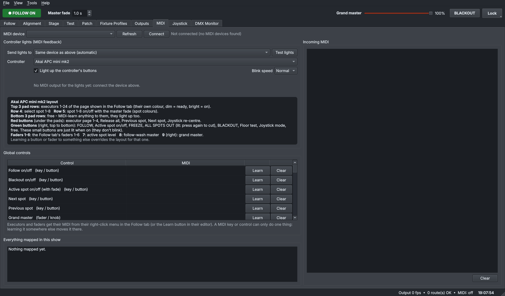
Connecting
- Plug the controller in, go to the MIDI tab, pick it under MIDI device and press Connect. Next time it reconnects automatically if it's plugged in.
- Known controllers are recognised by name and get their ready-made layout straight away (Controller: Auto-detect, or pick one).
- Press a pad: it shows under Incoming MIDI, so you can check the controller is talking.
On Windows, MIDI uses the built-in Windows MIDI system, so nothing extra needs installing. Only one program can use a MIDI device at a time, so close other software that has the controller open.
Learning buttons and faders
- Executor: right-click it → Learn MIDI / joystick button, then press a pad or key.
- Fader: right-click it → Learn MIDI fader/knob, then move a fader or knob.
- Global controls (MIDI tab): press Learn next to a control and press or move the control on your controller. Clear removes it.
Notes and CC both work for buttons (CC: 64 and above = pressed). Each MIDI control can only do one thing; learning it somewhere else moves it. Everything mapped in this show lists all of it. Learning a button or fader overrides the controller's ready-made layout for that one control only.
Global controls
| Control | Type |
|---|---|
| Follow on/off | button |
| Blackout on/off | button |
| Active spot on/off (with fade) | button |
| Next spot / Previous spot | button |
| Grand master | fader |
| Active spot intensity | fader |
| Master fade time | fader |
| Joystick: re-centre (fix drift) | button |
| Joystick: toggle speed / position mode | button |
| Joystick: fine control (hold) | hold |
| Freeze positions on/off | button |
| ALL SPOTS OUT (press twice = cut) | button |
| Release all executors | button |
| Floor test on/off | button |
| Select spot 1–8 | button |
| Spot 1–8 on/off (with fade) | button |
Controller lights
FollowYou lights up the controller's buttons to show what is on (Controller lights in the MIDI tab, Light up the controller's buttons).
- Send lights to: normally Same device as above (automatic); it finds the controller's MIDI output by itself. Nowhere turns lights off.
- Controller: Auto-detect picks the right preset. Generic works with most controllers: a lit button gets note-on velocity 127, an unlit one 0, on the same note and channel the button sends. Some cheap controllers only light a button while it's pressed and can't be lit from outside.
- Dim = ready, bright = on. FOLLOW and Floor test light when on; FREEZE, BLACKOUT and ALL SPOTS OUT (while “press again to cut” is armed) blink. Spot buttons use the spot's colour.
- Each executor has Controller light when on: Solid / Blink / Pulse in its editor, in the executor's own colour.
- Blink speed: Slow / Normal / Fast (half a blink, one, or two blinks a second).
- Test lights runs a rainbow over the controller to check it's connected.
- While the desk is locked, the pads slowly fade red up and down; a green wave runs over them when it's unlocked. The controller goes dark when FollowYou closes.
Akai APC mini mk2 (recommended)
Plug it in, pick it in the MIDI tab and press Connect. It's detected automatically and gets this layout, in exact colours:
| Where | What |
|---|---|
| Top 3 pad rows | Executors 1–24 of the page shown in the Follow tab |
| Pad row 4 | Select spot 1–8 |
| Pad row 5 | Spot 1–8 on/off with the master fade |
| Bottom 3 pad rows | Free: MIDI-learn anything to them (they light up too) |
| Red buttons (under the pads) | Executor page 1–4, Release all, Previous spot, Next spot, Joystick re-centre |
| Green buttons (right, top to bottom) | FOLLOW, Active spot on/off, FREEZE, ALL SPOTS OUT, BLACKOUT, Floor test, Joystick mode, free |
| Faders 1–6 | The Follow tab's faders 1–6 |
| Fader 7 / 8 / 9 (right) | Active spot level / Follow-wash master / Grand master |
The executor page on the controller and on screen are the same: change it on either. On the APC mini the small single-colour buttons (above the faders and on the right) don't blink: they're simply lit when on.
Other ready-made controllers
| Controller | Layout |
|---|---|
| Akai APC mini (mk1) | The same layout as the mk2. |
| Novation Launchpad Mini MK3 and Launchpad X | The same 8 × 8 grid layout as the APC mini. The top row of round buttons: page 1–4, Release all, Previous spot, Next spot, Joystick re-centre. The right-hand column: the same switches as the APC's green buttons. FollowYou puts it in Programmer mode itself. No faders. |
| Korg nanoKONTROL2 | Faders 1–6 = the Follow tab's faders, 7 = active spot level, 8 = grand master; knobs 1 and 2 = follow-wash master and master fade. S buttons = executors 1–8, M = select spot 1–8, R = spot 1–8 on/off. Transport: play = FOLLOW, stop = ALL SPOTS OUT, record = BLACKOUT, cycle = FREEZE, ◄◄ / ►► = previous / next spot, track ◄ / ► = executor page, marker set / ◄ / ► = Release all / Joystick re-centre / Floor test. For the button lights, set LED Mode to External once in the KORG KONTROL Editor. |
The APC mini mk2 layout is tested on the real controller; the other layouts are made from the makers' MIDI documentation.
Joystick
A joystick is the most natural way to follow by hand: push to move, twist for beam size, throttle for intensity.
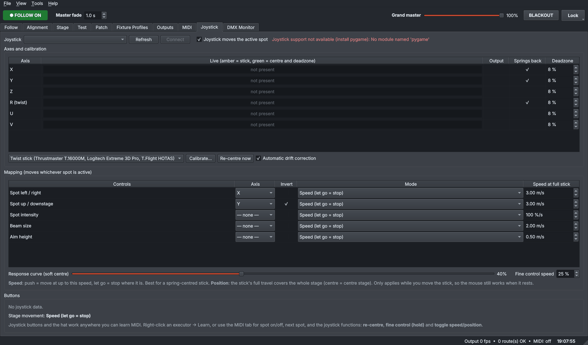
Connecting and calibrating
FollowYou works with any USB joystick, flight stick or gamepad that Windows sees (check in Windows' Set up USB game controllers). Nothing extra needs installing.
- In the Joystick tab, pick it and press Connect. It reconnects automatically, including if the cable gets pulled mid-show.
- A stick FollowYou knows loads its preset by itself. To load one by hand: Load a preset….
- Calibrate…: let go of the stick (it measures the centre), then move the stick, twist and throttle to all their limits and press Finish.
- Check the Mapping with the live bars. Windows numbers the axes differently for some models, and any axis can be changed in the table.
By default X moves the spot left/right and Y moves it up/downstage, with pushing forward going upstage. Untick Joystick moves the active spot to ignore the stick without disconnecting it.
Ready-made presets
- Twist stick: Thrustmaster T.16000M, Logitech Extreme 3D Pro, Thrustmaster T.Flight HOTAS.
- Xbox controller (and other XInput gamepads).
- PlayStation controller (DualShock 4 / DualSense).
What the axes can do
Each of these can be put on an axis: Spot left / right, Spot up / downstage, Spot intensity, Beam size and Aim height. Each mapping has an Invert tick, a Mode and a Speed at full stick.
| Mode | How it works | Best for |
|---|---|---|
| Speed (let go = stop) | Push = move, how far you push = how fast (up to Speed at full stick), let go = it stops where it is. Response curve makes small movements extra fine. | A self-centring stick (default). |
| Position (full stick = full range) | The stick's full travel = the whole stage, so stick centre is centre stage. It only takes over while you move it, so the mouse still works when the stick is resting. | A throttle used for intensity. |
- A lever that stays where you leave it (throttle, slider: Springs back unticked) always works in Position mode. In Speed mode it would never stop pushing.
- In Position mode the lever only takes control when you move it on purpose (about 2.5 % of its travel). As soon as anything else changes that value (Off button, MIDI, a fader, an executor, the mouse), the lever lets go until you move it again. A lever resting at the top can't hold a spot on, and noise from a worn lever never yanks the spot back.
Drift at centre
- Deadzone per axis: small movements around the centre are ignored. The green band in the live view shows it. 8 % is a good start; raise it for a worn stick.
- Automatic drift correction: while the stick rests inside the deadzone, its centre quietly follows the real resting position, so slow drift never builds up.
- Re-centre now: if the stick rests outside the deadzone and the spot creeps, let go and press this. Better: map a joystick button to Joystick: re-centre in the MIDI tab, so you can fix it mid-show without touching the mouse.
- Springs back: tick for sticks that return to the middle, untick for throttles that stay where you leave them.
Buttons and the hat
Joystick buttons and the hat are learned exactly like MIDI: right-click an executor → Learn MIDI / joystick button and press the button. The MIDI tab's global controls include joystick-only functions:
- Joystick: re-centre
- Joystick: fine control (hold): everything moves at the Fine control speed (25 % by default) while held. Great on the trigger.
- Joystick: toggle speed / position mode
Phones, tablets and operator stations
One station does the DMX output: the main station. Phones, tablets and other PCs can drive spots through it.
Remote access
Turn on on the main station and note the PIN.
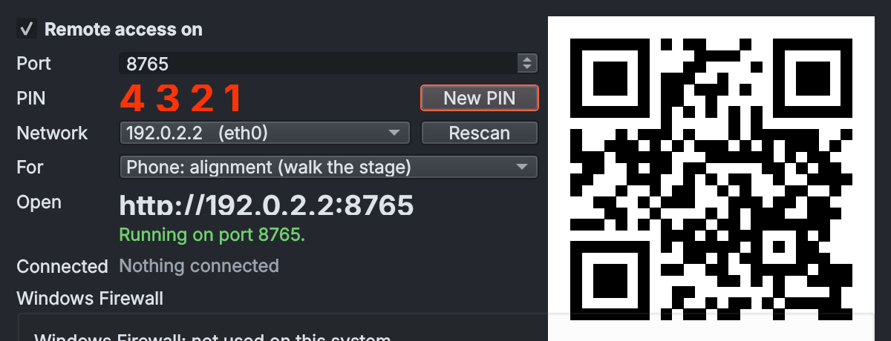
- Remote access on: starts it. It remembers being on and starts again with FollowYou.
- Port: default 8080. After changing it, open the firewall again.
- PIN: 4 digits. New PIN locks out phones that knew the old one.
- Network: the network the phones are on (Rescan after joining one).
- For: what the QR code opens: Phone: alignment (walk the stage), Phone / tablet: follow spot or Another computer as operator station.
- Connected: every phone and station that's connected.
Everyone can work on the same spots; the last change wins, and every screen shows who is driving which spot (e.g. “Singer ← Station-2”).
Follow spot from a phone or tablet
In Remote access pick Phone / tablet: follow spot and scan the QR code, or open http://<address>:8080/follow. This page is separate from the alignment page.
- Tap a spot at the top, then drag on the stage plan.
- Trackpad (default): drag anywhere; Slow / Normal / Fast sets the speed and two fingers make it 4× finer. Touch = position: the spot goes where your finger is.
- ON/OFF uses the master fade, FULL fades to full, plus a level slider, beam size and aim height.
- Options: turn the plan round (audience at the top), the name shown on the main station, and ALL SPOTS OUT.
- Phone browser menu → Add to Home screen gives a full-screen app icon.
Operator stations
A second (third…) PC runs FollowYou too and drives spots with its own mouse, joystick and MIDI, while the main station keeps doing all the DMX output.
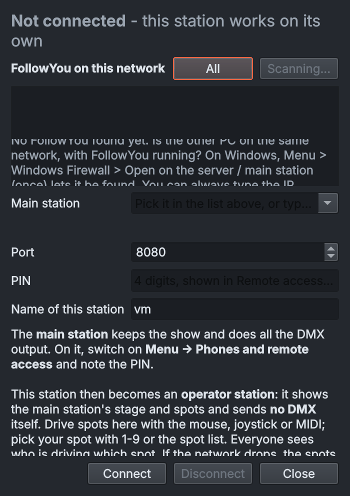
- Main station: , tick it on.
- Operator station: , press Search (or type the main station's IP), enter the PIN and a Name of this station, then Connect.
- The operator station gets the main station's stage, spots and alignment. Pick your spot (1–9, the spot list or the spot strip) and follow. FOLLOW ON/OFF, Space, ALL SPOTS OUT and FREEZE all work from here too.
On an operator station
- It sends no DMX: its outputs are switched off while connected.
- Setting up (patch, alignment, stage, outputs, adding spots) happens on the main station, and so does editing executors. The show is saved there too.
- “Active spot” means the operator's own spot: “Spot ON” pressed on an operator station that's on the Singer turns the Singer on. Buttons light up when they're live on the main station. An APC mini on the operator station presses (and lights) its executors too.
- Spot faders (intensity, beam size, aim height, zoom) work on the operator's own spot straight away; the others (e.g. grand master) are moved on the main station.
- Multi-spot works too if the main station allows it (Operators ▾ → Operators may control several spots at once). Each station has its own group.
- If the network drops, a red bar says so and it reconnects by itself. On the main station the spots hold where they are, and the Safety panel shows the station as LOST.
- Disconnect (same window) returns the station to working on its own, with no show loaded and no DMX output.
- Operator stations don't need a licence of their own.
Executors for operator stations
On the main station, Operators ▾ in the executor panel chooses what operator stations get:
- Operators use the main executors: they get the main executors. Each executor has two options (right-click → Operator stations, or in its editor):
- Show on operator stations: they see it, and see it light up.
- Operators can press it: off = they see it, marked main, but only the main station can run it.
- One executor bank for all operators: every operator station gets the bank All operators.
- A separate bank for each operator: an operator station gets the bank with its name (the name it connects with), or All operators if it has none.
Building banks
- Operators ▾ → Show / edit picks which bank the executor grid shows (it says Editing bank: … above the buttons). Make executors there as usual. Pressing them on the main station runs them with the main station's active spot, so you can try them.
- New bank for an operator…: pick a connected operator station or type its name; it can start as a copy of All operators.
- Copy / Paste: right-click an executor → Copy, then right-click a slot in any bank → Paste. Copy to bank puts a copy straight into another bank.
- Copy ‘…’ to copies a whole bank to another operator, or to every operator bank. From the main bank it copies the executors marked Show on operator stations.
- Rename / Delete a bank in the same menu.
Faders work the same way. With Operators use the main executors, each fader has Show on operator stations and Operators can move it; spot faders can be moved by operators, the others only shown, unless you change it. In an operator bank the six faders are that bank's own; a new bank starts with the operator's spot intensity, beam size and aim height.
Banks are saved in the show. Each operator station has its own toggles and flashes, even in a shared bank: one operator's press never turns another operator's toggle off.
Windows Firewall
Phones and operator stations have to get through the main station's firewall. In (or ):
- Open firewall for FollowYou asks Windows for administrator approval, then allows FollowYou's remote-access port (TCP) and its Search (UDP). Only devices on the local network are let in, on every network type (venue networks are often “Public”). It also lets in the picture from a GoPro on USB (UDP 8554, local only).
- If someone once pressed Cancel on Windows' “allow this app?” prompt, Windows made a rule that blocks it. That rule beats everything else, so it is switched off too (and remembered).
- Put firewall back to normal removes FollowYou's rules and switches those old block rules on again.
- The window shows whether the firewall is open, and warns if it was opened for a different port.
Operator stations don't need this: they only connect out.
Backup station and server mode
For shows that can't go dark: run the main station on a rack PC as the show's "server", with a second PC standing by that takes over the DMX output if the main one dies.
The setup
- Main station (server): a rack or desktop PC near the network switch. It keeps the show and does all the DMX output. It runs in server mode.
- Backup station: a second PC on the same network with FollowYou installed. It copies the show and follows everything live.
- Operator stations, phones, controllers: connect to the main station as usual (Operator stations). If the main station dies, they move over to the backup by themselves.
Backup station
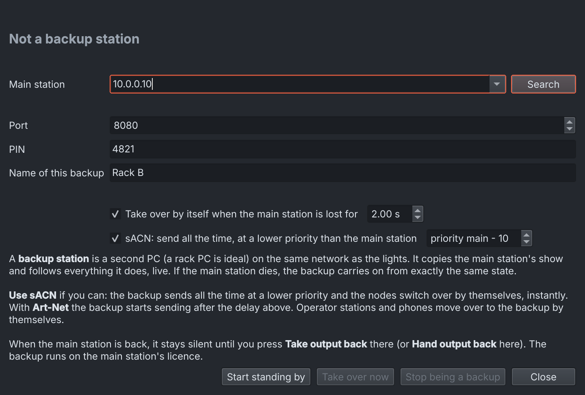
- On the main station: turn on and note the PIN.
- On the backup PC: open , press Search (or type the main station's IP), enter the PIN and press Start standing by.
- The backup loads the main station's show (patch, outputs, alignment, executors, recordings) and shows a green bar. From now on it mirrors everything 40 times a second: every spot, FOLLOW, Freeze, grand master, blackout and every DMX value.
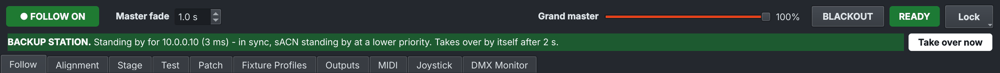
While standing by, the backup's controls are greyed out: nothing should be changed there. Changes to the show are made on the main station and copied over automatically.
sACN or Art-Net
| sACN (recommended) | Art-Net / USB DMX | |
|---|---|---|
| Standing by | The backup sends all the time, at a lower priority than the main station (main − 10). Receivers use the highest priority they hear, so they ignore it. | The backup stays silent. |
| Main station dies | Receivers switch to the backup by themselves, at once. The backup also goes live after the delay. | The backup starts sending after the delay (2 s by default). |
Take over by itself… after sets the delay. Untick it to only ever take over by hand (Take over now, in the window or the bar).
When the backup is live
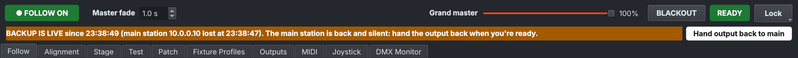
- It carries on from exactly the state the main station was in: positions, levels, colours, FOLLOW.
- Operator stations and phones that were linked to the main station move to the backup within a few seconds (the main station's PIN works there too).
- Its sACN priority goes above the main station's, so a main station that is restarted can't take the lights back by surprise.
Giving the output back
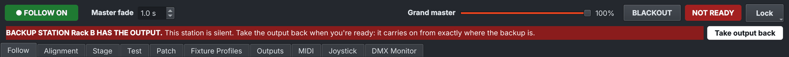
When the main station is running again, either press Take output back on the main station or Hand output back to main on the backup. The main station first takes over the backup's live state, so nothing jumps. Then the backup goes back to standing by, and the operator stations move back to the main station.
Server mode
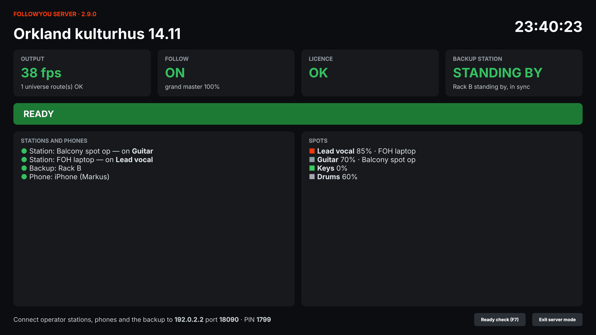
turns the main station into a screen made for a rack PC's monitor: big, readable from a distance, and nothing to click by accident. FollowYou carries on running and sending as normal behind it.
- Show the server screen now. Exit server mode (bottom right) goes back to the normal window. Esc does nothing on purpose.
- Start FollowYou in server mode: FollowYou opens the last show, turns on Remote access and shows the server screen.
FollowYou.exe --serverdoes the same. - Start FollowYou when Windows starts. On a rack PC, also set Windows to log in by itself and never sleep.
- F7 opens the full Ready check.
Console looks, themes and the presentation screen
Make FollowYou look like part of the desk next to it, and give a client or the audience a clean view of what the spots are doing.
Console looks
dresses FollowYou like the lighting desk next to it. A console look changes the panels, buttons, tabs, the stage plan, the corners and the font, and each look draws its own executor buttons and faders the way that desk does.
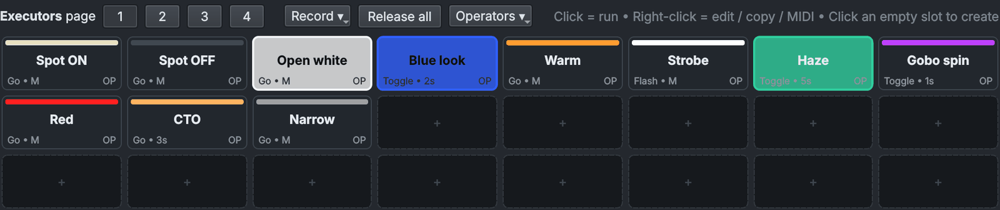
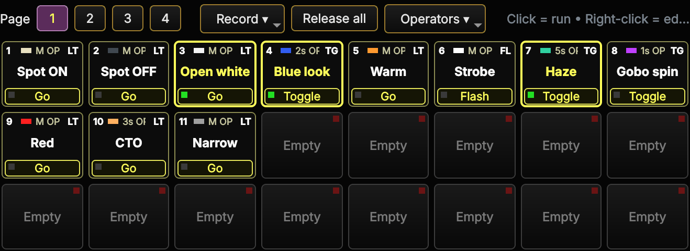
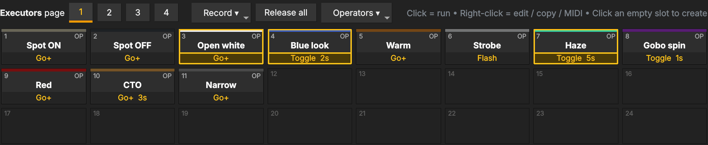
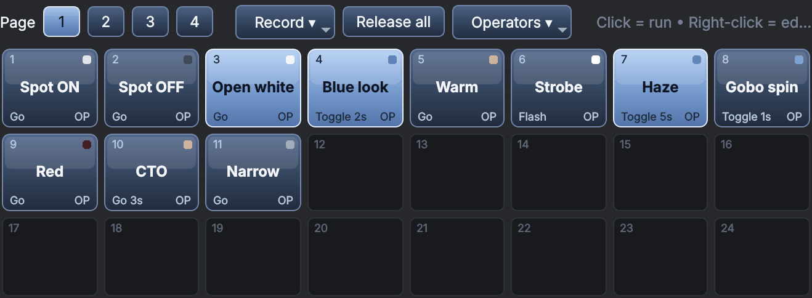
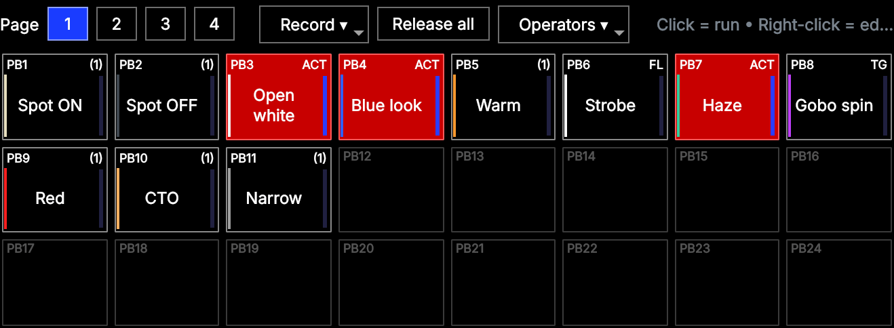
The looks copy colours, shapes and layout only: no makers' logos, icons or artwork. Each console look brings its own accent colour (Console look's colour at the top of ); pick any other accent on top if you like.
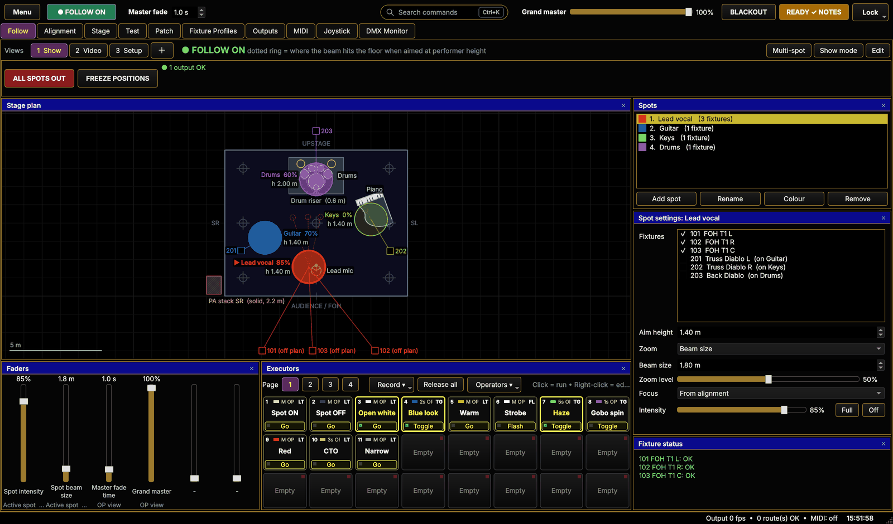
Theme (accent colour)
changes the accent colour: selected rows, slider fills, the selected item on the plan, the joystick pad and the phone pages. Pick Sceneproff red (standard), Amber (the classic FollowYou look), orange, blue, teal, purple, pink, white, or Custom colour… for any colour. It's remembered per computer and changes straight away (phones on their next page load). Status colours never change: green, amber and red always mean the same.
Presentation screen
(F9) opens a clean full-screen view on the second screen or projector: a 3D view of the rig, the stage plan and/or the camera picture with the spot ghosts. The header shows FOLLOW, every spot's level, its auto-track state and who is driving it; the status line shows fixtures aligned, DMX output, desk input, camera, connected phones and operator stations, and the time. Nothing on it changes the show, so it can face a client or an audience.
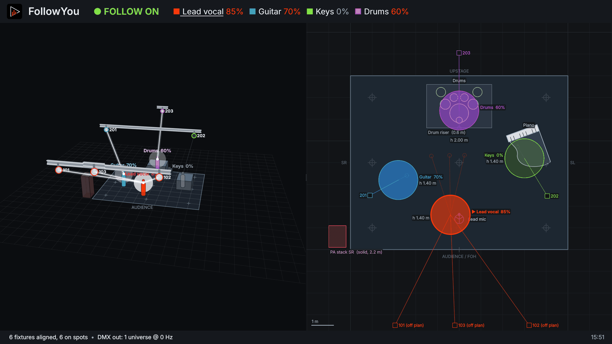
| Key | View |
|---|---|
| 1 | Plan |
| 2 | Camera |
| 3 | Plan + camera |
| 4 | 3D |
| 5 | 3D + camera |
| 6 | 3D + plan |
| F | Full screen on/off |
| O | Slow side-to-side sway of the 3D view on/off |
| Esc or F9 | Close |
Without a camera running, the camera is simply left out. With only one screen it opens as a normal window. The camera picture uses the same zoom as the Video panel.
The 3D view
- Every aligned fixture where the alignment worked out it hangs, on a truss. Fixtures at about the same height and depth share one truss bar automatically.
- Each beam as a line in the fixture's colour (from its CMY or RGB) to where it hits: the performer (a glow on them), or the floor or a riser (a pool the size of the beam). A fixture at 0 % shows a faint dotted line.
- The performers as figures in their spot's colour, with a trail of the last few seconds; risers and solid objects as blocks, and the marks.
- Drag with the mouse to turn it, wheel to go closer, double-click for the front view again.
Lock and show files
Lock the desk during a break, and keep each venue's setup in its own show file.
Lock
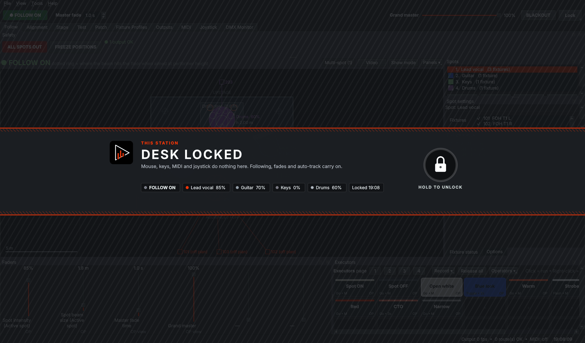
Lock (top bar, or Ctrl+L) stops anything changing by accident, e.g. during a break or with people around the desk.
- Lock this station: mouse clicks, keys, the wheel, MIDI and the joystick do nothing on this station. Following, fades and auto-track carry on. FollowYou can't be closed while it's locked.
- Lock all (main station): this station, every operator station and every phone are locked. Only the main station can unlock it.
- While locked, the band shows what the show is doing: FOLLOW, each spot's level and when it was locked.
- Unlock: without a lock password, hold the ring until it fills. With a password, type it and press Enter.
- Lock ▾ → Lock password… sets, changes or removes the password. It's saved on this station (as a hash, not the password itself), not in the show, so each station can have its own. Leave it empty to unlock by holding.
- A controller with lights (APC mini): the pads slowly fade red up and down while locked, and a green wave runs over them when it's unlocked.
- The lock screen follows the colours of your console look.
Show files
(Ctrl+S) writes a .fyshow file containing everything: patch, outputs, stage, alignment, washes, solid objects, spots, executors, faders, banks, MIDI map, camera calibration and a copy of every profile used.
- Show files have their own icon: the FollowYou logo with blue bars. Double-click a show file to open it. If FollowYou is already running, that window opens it (it asks to save first), so there is never a second FollowYou sending DMX.
- The alignment is stored in the show, so the next night at the same venue you just open it. A different venue, or a rig that has been moved, needs a fresh alignment.
.nfshowfiles from the Pre-Dev versions open fine. Saving one writes a new.fyshownext to it and leaves the old file untouched.- Moving a show to another PC: see Profiles and show files.
What is saved where
| In the show file | On this computer |
|---|---|
| Patch, outputs, desk input, stage, marks, risers, icons, stage layouts, alignment, washes, solid objects, spots, executors, faders, operator banks, MIDI and joystick-button map, master fade time, smoothing, camera calibration and framing, a copy of the profiles | Panel layout of the Follow page, console look and theme, joystick calibration and axis mapping, lock password, remote-access port and PIN, update settings, the profile library, the licence |
Show-day tools
Print the marks for the crew, train the operators with a virtual performer, and check everything with one button before doors.
Print the marks
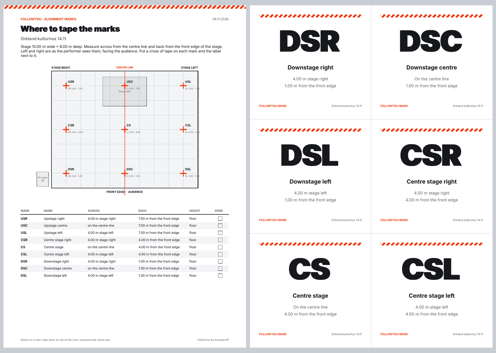
Print marks… in the Stage tab (or ) saves an A4 PDF and opens it:
- Page 1: the stage with every mark, and a table to tick off. Each mark is measured the way a crew measures: across from the centre line (stage left/right as the performer sees it) and back from the front edge.
- Label pages: one big label per mark (DSL, Downstage left, with its measurements), so nobody mixes up DSL and DSR on a dark stage.
Hand the sheet to the crew while you patch, and the stage is taped by the time you start aligning.
Practice mode
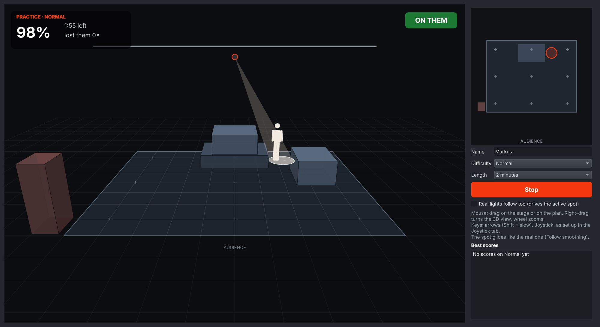
(F8) puts a virtual performer on your stage, with its real size, risers and solid objects. They walk somewhere, stop, turn and sometimes hurry, like a real performer. You follow them with what you'll use in the show:
- Mouse: drag on the 3D stage, or on the small plan (like the Follow tab: you watch the stage and steer on the plan). Right-drag turns the 3D view, the wheel zooms.
- Joystick: as set up in the Joystick tab.
- Arrow keys (Shift = slow).
Pick a Difficulty (Easy, Normal, Hard: faster walking, shorter pauses, sudden runs, a smaller beam) and a Length, then press Start or Space. The spot glides with the same smoothing as the real spots.
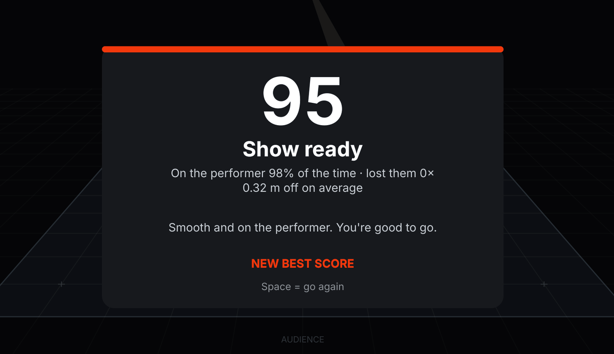
- No lights needed: the show's spots and the DMX output are left alone. It works on a laptop on its own and in DEMO mode, so it's also a good demo on a stand.
- Real lights follow too makes the active spot copy your practice spot, for a live demo with real fixtures.
Ready for show
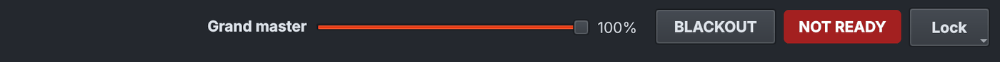
The READY button on the top bar checks everything that matters once a second and turns green (ready), amber (ready, with notes) or red (not ready). Hover over it to see the first problem; click it (or press F7) for the full list.
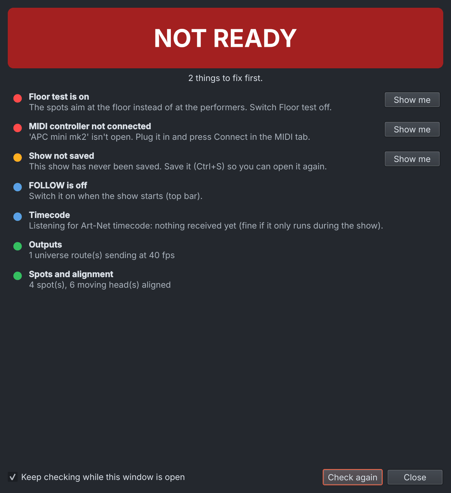
| Checks | Red (not ready) when… |
|---|---|
| Licence | DEMO mode. A pulled-out USB key is amber: licensed until FollowYou closes. |
| Outputs | A route has an error, the output isn't running, or this station is silent because a backup has the output. |
| Patch, spots, alignment | Nothing patched, no spots, or a moving head on a spot isn't aligned. Over 0.5° is amber. |
| Floor test, Freeze, Blackout | Floor test is on. Freeze, blackout and a low grand master are amber. |
| Joystick, MIDI controller | One that was set up isn't connected. |
| Stations, backup | A backup station has the output. A lost station or backup, or Remote access off, is amber. |
| Timecode, show file | Amber: recordings wait for timecode but no input is chosen; unsaved changes. |
FOLLOW being off is only a note: switch it on when the show starts. On an operator station the check covers its own link, spot and controllers.
Recommended hardware
FollowYou runs with a mouse alone, but the right hardware makes following easier and faster. Sceneproff recommends, and FollowYou has ready-made setups for:
| What | Recommended | Also ready-made |
|---|---|---|
| MIDI controller | Akai APC mini mk2: RGB pads, 9 faders | Akai APC mini (mk1), Novation Launchpad Mini MK3 / Launchpad X, Korg nanoKONTROL2 |
| Joystick | Thrustmaster T.16000M FCS: precise, twist for beam size, throttle for intensity | Logitech Extreme 3D Pro, Thrustmaster T.Flight HOTAS, Xbox controller, PlayStation controller |
| DMX | An Art-Net / sACN node, or an ENTTEC DMX USB Pro | ENTTEC Open DMX / FTDI cables |
| Camera (auto-track) | Elgato Facecam | Other webcams, HDMI cameras through a USB capture card, GoPro HERO9+ over USB, virtual cameras, network streams |
The show PC
- Windows 10 or 11, 64-bit. Any recent laptop runs the follow itself easily.
- For auto-track, a reasonably recent CPU: the body model takes about 20–40 ms per picture on a normal computer.
- A wired network port (or a USB network adapter) for the DMX node. Keep the lighting network off the venue's Wi-Fi where you can.
- Turn off sleep, screen savers and Windows Update restarts for show days.
Custom console case
Sceneproff builds custom FollowYou consoles: a road case with the controller, joystick and a mount for the laptop or screen, cut to fit. Contact Sceneproff for a quote.
Troubleshooting
The usual problems, and what fixes them.
| Problem | What to check |
|---|---|
| Nothing comes out of the fixtures | Is FOLLOW ON, the spot above 0 and BLACKOUT off? Is the Grand master up? Does the Safety panel show the output OK? Check the DMX Monitor, then the patch addresses against the fixtures' menus. |
| Red bar under the top bar | An output has a problem: USB interface unplugged, network cable out, wrong network card in Send from network card. |
| USB interface: “device is in use” | Close QLC+ or other lighting software. Pick the FTDI direct entry for Enttec interfaces. Check you picked Pro vs Open DMX correctly. |
| Light lands behind the performer on an empty stage | That's correct: the spot aims at chest height. Tick Floor test to check the alignment on the floor. |
| The follow is off in one area of the stage | Check the fixture's Result: re-store the mark with the biggest error, or store more marks there. Check the tape is where the Stage tab says. |
| Result says Suspicious | One mark was stored aimed at the wrong spot. Re-store or clear the mark with the biggest error. |
| A spot won't go off, or keeps jumping back | Look at the line under Intensity in Spot settings: it names what last changed it (a joystick axis, a MIDI fader, an executor, a phone). |
| The spot creeps by itself with a joystick | Let go and press Re-centre now, raise the Deadzone, or map Joystick: re-centre to a button. |
| Beam size does nothing | The profile has no zoom angles. Add them, or use Measure zoom angles…. If the size is out of the fixture's reach, the status says so. |
| A phone or operator station can't connect | Same network? Right PIN and port? Press Open firewall for FollowYou on the main station. On a venue network that blocks devices from seeing each other, use the Windows Mobile hotspot. |
| MIDI controller doesn't respond | Close other software using it, press Refresh, then Connect. Check Incoming MIDI. In DEMO mode MIDI is ignored. |
| Controller lights don't work | Check Send lights to and Controller; press Test lights. nanoKONTROL2: set LED Mode to External. |
| Auto-track holds or searches a lot | Raise the camera, zoom in on the stage, calibrate again. Haze, strobes, look-alike costumes and small performers in the picture make it hold. Double-click the performer to help it. |
| Lights dip every few minutes, or go dark after 30 minutes | FollowYou is in DEMO mode. Plug in the USB key (before starting) or load the licence file. |
| A show opens with different fixture behaviour | The show was saved with other profile versions. Choose Use the show's versions when asked. |
| Something else | Look in logs\FollowYou.log and send it to Sceneproff support. |
Show-day checklist
Print this page and tick it off at every venue.
Before you leave
- USB licence key with the show PC
- Show file for this venue (or last time's), plus a copy on a stick
- FollowYou updated on a prep day, not today
- Controller, joystick, cables, DMX node or USB interface
- Camera, mount and active USB extension (for auto-track)
- Tape (two colours), tape measure, the mark sheet (Stage tab → Print marks…)
Setup
- USB key in before starting FollowYou
- Outputs green in the Safety panel
- Stage size entered, marks generated and taped
- Every follow fixture aligned, Result under 0.5°
- Follow-wash areas drawn where the light lands, tested
- Solid objects tested (green/red lines)
- Floor test: beams land on the dots everywhere
- Floor test off again
- Spots named, fixtures ticked, colours set
- Camera calibrated (if used), under 3 px
Line check
- MIDI controller connected, Test lights OK
- Joystick connected and calibrated, no creep
- Phones / operator stations connected, PIN known
- Executors and faders do what you expect
- ALL SPOTS OUT and FREEZE tested
- Show saved (Ctrl+S)
- Backup station standing by (if you use one)
- READY is green (F7)
Show
- Sleep and screen saver off on the show PC
- Show mode (F10) and panels locked
- Lock (Ctrl+L) during breaks
- Hand near the mouse when auto-tracking
- Save the show at the end of the night
Keys and mouse
Anywhere
| F1 | User manual, at the chapter for this tab |
| Ctrl+N | New show |
| Ctrl+O | Open show |
| Ctrl+S | Save show |
| Ctrl+L | Lock this station |
| F7 | Ready for show check |
| F8 | Practice mode |
| F9 | Presentation screen |
| F10 | Show mode |
| F11 | Full screen |
Follow tab (stage plan)
| Click / drag | Move the active spot |
| Shift-drag | Move finely |
| Arrows | Nudge |
| Wheel | Beam size (zoom level in Manual) |
| Ctrl+wheel | Aim height |
| 1–9 | Pick a spot |
| Ctrl+1–9 | Add / remove a spot (multi-spot) |
| Space | Active spot on/off (master fade) |
| M | Multi-spot on/off |
| Right-click | Pick the nearest spot |
| Ctrl+right-click | Add / remove a spot (multi-spot) |
| Double-click an icon | Send the active spot there |
Alignment
| Drag the pad | Aim the fixture |
| Shift-drag | 10× finer |
| Arrows | Nudge |
| Enter | Store at this mark |
| G | Alignment gobo on/off |
Video panel
| Drag on a performer | Move the active spot there |
| Ctrl-drag | Left/right only (lock depth) |
| Double-click a performer | Go there and auto-track |
| T | Auto-track on/off for the active spot |
| Esc | Stop all auto-tracking |
| Right-click a ghost | Make it the active spot |
| 1–9 | Pick a spot |
| Space | Active spot on/off |
| Wheel, + / − | Zoom the picture |
| Alt+drag, middle-drag | Move the picture |
| Home or 0 | Fit the whole picture |
| ◄ ► | Skip a mark while calibrating |
Presentation screen
| 1–6 | Plan, camera, plan+camera, 3D, 3D+camera, 3D+plan |
| F | Full screen on/off |
| O | 3D sway on/off |
| Drag / wheel / double-click | Turn / zoom / front view (3D) |
| Esc, F9 | Close |
Phone
| Two fingers | Finer (10× aligning, 4× following) |
| Hold an arrow | Repeat the nudge |
Files and folders
| File | What it is |
|---|---|
.fyshow | A show file (blue bars icon). Double-click to open. |
.nfshow | A show file from the Pre-Dev versions. Opens fine; saving writes a new .fyshow. |
.fylicence | A licence file (green key icon). Double-click to install. |
.json in profiles\ | Fixture profiles. |
The installed FollowYou folder:
FollowYou.exe the program manual\ this manual (Help → User manual, F1) profiles\ your fixture profile library (kept on updates) profiles\backup\ old profile versions replaced by a show's versions assets\ icons models\ body-pose model for auto-track (MoveNet, Apache 2.0) ui\remote\ the phone pages setup\firewall.ps1 used by Tools → Windows Firewall logs\ FollowYou.log (errors)
Glossary
- Active spot
- The spot you are driving right now. Executors set to Active spot act on it. On an operator station, the operator's own spot.
- Aim height
- How high above the floor a spot aims: 1.4 m is about chest height.
- Alignment
- Aiming each fixture at taped marks so FollowYou can work out where it hangs. Done once per venue, saved in the show.
- Auto-track
- The camera follows a performer and moves their spot. It never changes intensity.
- Bank
- A set of executors and faders for operator stations.
- Backup station
- A second PC that mirrors the main station live and takes over the DMX output if the main station dies.
- Beam size
- The beam's width in metres at the performer, kept the same anywhere on stage. Needs the profile's zoom angles.
- Executor
- A button that sets parameters: Go, Toggle or Flash. 4 pages of 24.
- FOLLOW
- The main switch: while on, fixtures on a spot are driven by FollowYou.
- Follow wash
- A static fixture (PAR, fresnel, LED wash) tied to an area of the stage. It fades up when a spot walks into that area, by how central the spot is and the spot's intensity.
- Ghost
- A spot drawn on the camera picture: a ring on the floor, a person-height line and a dot at aim height.
- Main station
- The PC that does the DMX output and keeps the show. Phones and operator stations connect to it.
- Mark
- A taped cross on the stage floor at a known position, used for alignment and camera calibration.
- Multi-spot
- Several spots driven together, led by the active spot.
- Operator station
- Another PC running FollowYou, connected to the main station. It drives spots but sends no DMX.
- Practice mode
- A virtual performer to follow, with a score. No lights needed.
- Profile
- A description of a fixture type: channels, ranges, pan/tilt range, zoom angles.
- Recording
- Spot moves recorded in rehearsal, played back by hand, from the desk (MIDI or a DMX channel) or locked to timecode.
- Riser
- Something performers stand on. A spot on it aims higher by the riser's height.
- Server mode
- The main station's screen for a rack PC: big status, nothing to click by accident.
- Solid object
- Something that blocks light. A fixture whose view is blocked dims out.
- Spot
- One performer, with the fixtures that follow them.
- Timecode
- A running clock (MTC or Art-Net) from the desk or show control. Recordings can follow it.
- Stage layout
- A stored set of risers, solid objects and icons, for scenery changes.
Version history
| 2.9 | Show-day tools: Ready for show check (top bar, F7), Print marks (A4 mark sheet and labels), Practice mode (F8), Record and play back spots (MIDI, desk DMX channel, MTC or Art-Net timecode), Backup station with automatic takeover, and Server mode for a rack PC. |
| 2.8 | The user manual is built in: F1 or Help → User manual opens it at the chapter for the tab you are on, offline. Help → User manual online opens the newest version. |
| 2.7.1 | New lock screen: a locked band across the screen with the show status (FOLLOW, spot levels, when it was locked) and a hold-to-unlock ring. |
| 2.7 | Licence files (.fylicence) have their own icon and install with a double-click. |
| 2.6 | Console looks draw executor buttons, faders, buttons, tabs and title bars like each desk. |
| 2.5 | Console looks: grandMA2, grandMA3, Avolites Titan and ChamSys MagicQ style. |
| 2.4.1 | A clock in the status bar. |
| 2.4 | One compiled program (no Python needed), 19 fixture profiles, ready-made layouts for more MIDI controllers and joysticks. |
| 2.3 | A real DEMO mode. 2.3.1: updates signed with their own key. |
| 2.2 | Updates, with the blue bar (never during a show). |
| 2.1 | Licences: USB key or licence file. 2.1.1: licence types. |
| 2.0 | Multi-spot, faders on operator stations, stage icons and layouts, desk lock, show files with their own icon. 2.0.1: lock password, operator stations. 2.0.2: calmer controller lights. |
| 1.8 | Executors on operator stations, with banks. |
| 1.7 | Lighting desk input, presentation screen with 3D view, auto-track that searches and locks on again. |
| 1.6 | Auto-track with body points and clothes colour. 1.6.1–1.6.3: alignment gobo, Manual zoom level, profile versions in show files, Ayrton Diablo-S. |
| 1.5 | Lamp control, zoom warnings and Measure zoom angles. |
| 1.4 | Sceneproff logo and name, colour themes, spot colours. |